<!DOCTYPE html>
<html lang="zh-CN">
<head>
  <meta charset="UTF-8">
  <meta name="viewport" content="width=device-width, initial-scale=1.0, viewport-fit=cover">
  <meta name="description" content="《星球大战：X 翼战机》（Star Wars: X-Wing Miniatures Game）官方英文规则书全文中文翻译：模型空战 · 移动模板 · 第二版规则，24 页整本译出，含设置、流程、计分与附录，附官方原文 PDF 链接。">
  <title data-zh="星球大战：X 翼战机 (Star Wars: X-Wing Miniatures Game) · 规则 — 桌游规则书" data-en="Star Wars: X-Wing Miniatures Game · Rules — Board Game Rules">星球大战：X 翼战机 (Star Wars: X-Wing Miniatures Game) · 规则 — 桌游规则书</title>
  <link rel="icon" href="data:image/svg+xml,<svg xmlns='http://www.w3.org/2000/svg' viewBox='0 0 100 100'><text y='0.9em' font-size='90'>✈️</text></svg>">
  <link rel="stylesheet" href="../assets/css/style.css">
  <link rel="canonical" href="https://rule.zhibinai.cn/games/sw-x-wing.html">
  <meta property="og:site_name" content="桌游规则书">
  <meta property="og:locale" content="zh_CN">
  <meta property="og:type" content="article">
  <meta property="og:title" content="星球大战：X 翼战机 (Star Wars: X-Wing Miniatures Game) · 规则 — 桌游规则书">
  <meta property="og:description" content="《星球大战：X 翼战机》（Star Wars: X-Wing Miniatures Game）官方英文规则书全文中文翻译：模型空战 · 移动模板 · 第二版规则，24 页整本译出，含设置、流程、计分与附录，附官方原文 PDF 链接。">
  <meta property="og:url" content="https://rule.zhibinai.cn/games/sw-x-wing.html">
  <meta property="og:image" content="https://rule.zhibinai.cn/assets/img/sw-x-wing/01.webp">
  <meta name="twitter:card" content="summary_large_image">
  <meta name="twitter:title" content="星球大战：X 翼战机 (Star Wars: X-Wing Miniatures Game) · 规则 — 桌游规则书">
  <meta name="twitter:description" content="《星球大战：X 翼战机》（Star Wars: X-Wing Miniatures Game）官方英文规则书全文中文翻译：模型空战 · 移动模板 · 第二版规则，24 页整本译出，含设置、流程、计分与附录，附官方原文 PDF 链接。">
  <script type="application/ld+json">{
 "@context": "https://schema.org",
 "@graph": [
  {
   "@type": "WebSite",
   "@id": "https://rule.zhibinai.cn/#website",
   "name": "桌游规则书",
   "url": "https://rule.zhibinai.cn/",
   "inLanguage": "zh-CN",
   "description": "免费中文桌游规则书查询站：热门桌游完整中文规则全文 + Board Game Arena 全量官方规则中文版。"
  },
  {
   "@type": "WebPage",
   "@id": "https://rule.zhibinai.cn/games/sw-x-wing.html",
   "url": "https://rule.zhibinai.cn/games/sw-x-wing.html",
   "name": "星球大战：X 翼战机 (Star Wars: X-Wing Miniatures Game) · 规则 — 桌游规则书",
   "description": "《星球大战：X 翼战机》（Star Wars: X-Wing Miniatures Game）官方英文规则书全文中文翻译：模型空战 · 移动模板 · 第二版规则，24 页整本译出，含设置、流程、计分与附录，附官方原文 PDF 链接。",
   "isPartOf": {
    "@id": "https://rule.zhibinai.cn/#website"
   },
   "inLanguage": "zh-CN",
   "dateModified": "2026-11-09",
   "primaryImageOfPage": {
    "@type": "ImageObject",
    "url": "https://rule.zhibinai.cn/assets/img/sw-x-wing/01.webp"
   }
  },
  {
   "@type": "BreadcrumbList",
   "itemListElement": [
    {
     "@type": "ListItem",
     "position": 1,
     "name": "首页",
     "item": "https://rule.zhibinai.cn/"
    },
    {
     "@type": "ListItem",
     "position": 2,
     "name": "星球大战：X 翼战机 (Star Wars: X-Wing Miniatures Game)",
     "item": "https://rule.zhibinai.cn/games/sw-x-wing.html"
    }
   ]
  }
 ]
}</script>
  <!-- seo-wired -->
</head>
<body data-theme="sw-x-wing" data-game-key="sw-x-wing">

  <div class="progress-bar" aria-hidden="true"></div>

  <header class="topbar">
    <button class="menu-btn" aria-label="打开目录" aria-expanded="false" data-i18n-aria="openToc">☰</button>
    <a class="brand" href="../index.html" data-i18n="brand">🎲 桌游规则书</a>
    <span class="topbar-title" data-zh="星球大战：X 翼战机" data-en="Star Wars: X-Wing Miniatures Game">星球大战：X 翼战机</span>
  </header>

  <div class="layout">
    <aside class="sidebar" id="sidebar">
      <nav class="toc" aria-label="本页目录" data-i18n-aria="onThisPage">
        <div class="toc-title" data-i18n="onThisPage">本页目录</div>
        <ul id="toc-list"></ul>
      </nav>
      <nav aria-label="全部游戏" data-i18n-aria="allGames">
        <div class="toc-title" data-i18n="allGames">全部游戏</div>
        <ul>
          <li><a href="../index.html" data-i18n="home">🏠 返回首页</a></li>
          <li><a href="7-wonders.html" data-zh="🏛️ 七大奇迹" data-en="🏛️ 7 Wonders">🏛️ 七大奇迹</a></li>
          <li><a href="brass-birmingham.html" data-zh="🏭 工业革命：伯明翰" data-en="🏭 Brass: Birmingham">🏭 工业革命：伯明翰</a></li>
          <li><a href="vale-of-eternity.html" data-zh="✨ 永恒之谷" data-en="✨ The Vale of Eternity">✨ 永恒之谷</a></li>
          <li><a href="wingspan.html" data-zh="🦜 展翅翱翔" data-en="🦜 Wingspan">🦜 展翅翱翔</a></li>
          <li><a href="pokemon-grove.html" data-zh="🌳 宝可梦林地探索" data-en="🌳 Pokemon Grove">🌳 宝可梦林地探索</a></li>
          <li><a href="puerto-rico.html" data-zh="⛵ 波多黎各" data-en="⛵ Puerto Rico">⛵ 波多黎各</a></li>
          <li><a href="barcelona.html" data-zh="🌸 巴塞罗那" data-en="🌸 Barcelona">🌸 巴塞罗那</a></li>
          <li><a href="dune-imperium.html" data-zh="🏜️ 沙丘：帝国" data-en="🏜️ Dune: Imperium">🏜️ 沙丘：帝国</a></li>
          <li><a href="dune-imperium-uprising.html" data-zh="🪱 沙丘：帝国起义" data-en="🪱 Dune: Imperium – Uprising">🪱 沙丘：帝国起义</a></li>
          <li><a href="ascension.html" data-zh="🃏 创升纪元" data-en="🃏 Ascension">🃏 创升纪元</a></li>
          <li><a href="tulip-bubble.html" data-zh="🌷 郁金香泡沫" data-en="🌷 Tulip Bubble">🌷 郁金香泡沫</a></li>
          <li><a href="trajan.html" data-zh="🦅 图拉真" data-en="🦅 Trajan">🦅 图拉真</a></li>
          <li><a href="galileo-galilei.html" data-zh="🔭 伽利略：伽利莱" data-en="🔭 Galileo Galilei">🔭 伽利略：伽利莱</a></li>
          <li><a href="orloj.html" data-zh="🕰️ 奥洛伊：布拉格天文钟" data-en="🕰️ Orloj: The Prague Astronomical Clock">🕰️ 奥洛伊：布拉格天文钟</a></li>
          <li><a href="food-chain-magnate.html" data-zh="🍔 快餐连锁大亨" data-en="🍔 Food Chain Magnate">🍔 快餐连锁大亨</a></li>
          <li><a href="clank-catacombs.html" data-zh="🐉 CLANK! 地下墓穴" data-en="🐉 Clank!: Catacombs">🐉 CLANK! 地下墓穴</a></li>
          <li><a href="clank-catacombs-underworld.html" data-zh="💀 CLANK! 地下墓穴:地下世界" data-en="💀 Clank! Catacombs: Underworld">💀 CLANK! 地下墓穴:地下世界</a></li>
          <li><a href="clank-adventuring-party.html" data-zh="🗡️ CLANK! 冒险队" data-en="🗡️ Clank!: Adventuring Party">🗡️ CLANK! 冒险队</a></li>
          <li><a href="ark-nova-marine-worlds.html" data-zh="🐙 方舟动物园：海洋世界" data-en="🐙 Ark Nova: Marine Worlds">🐙 方舟动物园：海洋世界</a></li>
          <li><a href="arnak-expedition-leaders.html" data-zh="🗿 阿纳克遗迹:探险队长" data-en="🗿 Lost Ruins of Arnak: Expedition Leaders">🗿 阿纳克遗迹:探险队长</a></li>
          <li><a href="speakeasy.html" data-zh="🎷 地下酒吧" data-en="🎷 Speakeasy">🎷 地下酒吧</a></li>
          <li><a href="power-grid.html" data-zh="⚡ 电力公司" data-en="⚡ Power Grid">⚡ 电力公司</a></li>
          <li><a href="seti.html" data-zh="🛰️ SETI：寻找外星人" data-en="🛰️ SETI: Search for Extraterrestrial Intelligence">🛰️ SETI：寻找外星人</a></li>
          <li><a href="seti-space-agencies.html" data-zh="🚀 地外文明：太空机构" data-en="🚀 SETI: Space Agencies">🚀 地外文明：太空机构</a></li>
          <li><a href="white-castle.html" data-zh="🏯 姬路城" data-en="🏯 The White Castle">🏯 姬路城</a></li>
          <li><a href="white-castle-matcha.html" data-zh="🍵 姬路城：茶道" data-en="🍵 The White Castle: Matcha">🍵 姬路城：茶道</a></li>
          <li><a href="endeavor-deep-sea.html" data-zh="🌊 奋进号：深海" data-en="🌊 Endeavor: Deep Sea">🌊 奋进号：深海</a></li>
          <li><a href="druids-of-edora.html" data-zh="🌲 埃多拉的德鲁伊" data-en="🌲 The Druids of Edora">🌲 埃多拉的德鲁伊</a></li>
          <li><a href="grand-austria-hotel.html" data-zh="🏨 奥地利大饭店" data-en="🏨 Grand Austria Hotel">🏨 奥地利大饭店</a></li>
          <li><a href="the-message.html" data-zh="🕵️ 风声再临" data-en="🕵️ The Message">🕵️ 风声再临</a></li>
          <li><a href="gwt-new-zealand.html" data-zh="🐑 大西部开拓者:新西兰" data-en="🐑 Great Western Trail: New Zealand">🐑 大西部开拓者:新西兰</a></li>
          <li><a href="fields-of-arle.html" data-zh="🌾 阿勒農場" data-en="🌾 Fields of Arle">🌾 阿勒農場</a></li>
          <li><a href="gaiaproject-lost-fleet.html" data-zh="🌌 盖亚计划:失落的舰队" data-en="🌌 Gaia Project: The Lost Fleet">🌌 盖亚计划:失落的舰队</a></li>
          <li><a href="spirit-island.html" data-zh="🏝️ 灵迹岛" data-en="🏝️ Spirit Island">🏝️ 灵迹岛</a></li>
          <li><a href="harmonies.html" data-zh="🦁 自然和弦" data-en="🦁 Harmonies">🦁 自然和弦</a></li>
          <li><a href="agricola-revised.html" data-zh="🌾 农场主（修订版）" data-en="🌾 Agricola (Revised Edition)">🌾 农场主（修订版）</a></li>
          <li><a href="final-girl.html" data-zh="🎬 最终女孩" data-en="🎬 Final Girl">🎬 最终女孩</a></li>
          <li><a href="le-havre.html" data-zh="⚓ 勒阿弗尔" data-en="⚓ Le Havre">⚓ 勒阿弗尔</a></li>
          <li><a href="lotr-duel-for-middle-earth.html" data-zh="🌋 魔戒：中土对决" data-en="🌋 The Lord of the Rings: Duel for Middle-earth">🌋 魔戒：中土对决</a></li>
          <li><a href="marvel-champions.html" data-zh="🦸 漫威群英传：卡牌版" data-en="🦸 Marvel Champions: The Card Game">🦸 漫威群英传：卡牌版</a></li>
          <li><a href="nemesis.html" data-zh="👽 复仇女神号" data-en="👽 Nemesis">👽 复仇女神号</a></li>
          <li><a href="pandemic-legacy-season-0.html" data-zh="🕵️ 瘟疫危机：传承·第0季" data-en="🕵️ Pandemic Legacy: Season 0">🕵️ 瘟疫危机：传承·第0季</a></li>
          <li><a href="pandemic-legacy-season-1.html" data-zh="🦠 瘟疫危机：传承·第一季" data-en="🦠 Pandemic Legacy: Season 1">🦠 瘟疫危机：传承·第一季</a></li>
          <li><a href="android-netrunner.html" data-zh="🤖 安卓：潜袭" data-en="🤖 Android: Netrunner">🤖 安卓：潜袭</a></li>
          <li><a href="arkham-horror-lcg.html" data-zh="🔍 诡镇奇谈：卡牌版" data-en="🔍 Arkham Horror: The Card Game">🔍 诡镇奇谈：卡牌版</a></li>
          <li><a href="bomb-busters.html" data-zh="💣 拆弹小队" data-en="💣 Bomb Busters">💣 拆弹小队</a></li>
          <li><a href="cascadia.html" data-zh="🌲 卡斯卡迪亚" data-en="🌲 Cascadia">🌲 卡斯卡迪亚</a></li>
          <li><a href="everdell.html" data-zh="🌰 仙境幽谷" data-en="🌰 Everdell">🌰 仙境幽谷</a></li>
          <li><a href="five-tribes.html" data-zh="🏜️ 五大部落" data-en="🏜️ Five Tribes: The Djinns of Naqala">🏜️ 五大部落</a></li>
          <li><a href="kanban-ev.html" data-zh="🚗 看板：电动汽车版" data-en="🚗 Kanban EV">🚗 看板：电动汽车版</a></li>
          <li><a href="lisboa.html" data-zh="🏛️ 里斯本" data-en="🏛️ Lisboa">🏛️ 里斯本</a></li>
          <li><a href="mage-knight.html" data-zh="🧙 魔骑士" data-en="🧙 Mage Knight Board Game">🧙 魔骑士</a></li>
          <li><a href="mansions-of-madness-2e.html" data-zh="🏚️ 疯狂诡宅（第二版）" data-en="🏚️ Mansions of Madness: Second Edition">🏚️ 疯狂诡宅（第二版）</a></li>
          <li><a href="paladins-of-the-west-kingdom.html" data-zh="🛡️ 西王国的圣骑士" data-en="🛡️ Paladins of the West Kingdom">🛡️ 西王国的圣骑士</a></li>
          <li><a href="pandemic-legacy-season-2.html" data-zh="🧭 瘟疫危机：传承·第二季" data-en="🧭 Pandemic Legacy: Season 2">🧭 瘟疫危机：传承·第二季</a></li>
          <li><a href="quacks.html" data-zh="🧪 奎德林堡的江湖郎中" data-en="🧪 Quacks">🧪 奎德林堡的江湖郎中</a></li>
          <li><a href="root.html" data-zh="🦊 茂林源记" data-en="🦊 Root">🦊 茂林源记</a></li>
          <li><a href="slay-the-spire-bg.html" data-zh="🗡️ 杀戮尖塔：版图游戏" data-en="🗡️ Slay the Spire: The Board Game">🗡️ 杀戮尖塔：版图游戏</a></li>
          <li><a href="star-wars-imperial-assault.html" data-zh="🎯 星球大战：帝国突击" data-en="🎯 Star Wars: Imperial Assault">🎯 星球大战：帝国突击</a></li>
          <li><a href="star-wars-rebellion.html" data-zh="🚀 星球大战：叛乱" data-en="🚀 Star Wars: Rebellion">🚀 星球大战：叛乱</a></li>
          <li><a href="the-crew-planet-nine.html" data-zh="🪐 星际探险队：第九行星" data-en="🪐 The Crew: The Quest for Planet Nine">🪐 星际探险队：第九行星</a></li>
          <li><a href="the-gallerist.html" data-zh="🖼️ 画商" data-en="🖼️ The Gallerist">🖼️ 画商</a></li>
          <li><a href="ticket-to-ride-legacy.html" data-zh="🚂 车票之旅：传承·西部传奇" data-en="🚂 Ticket to Ride Legacy: Legends of the West">🚂 车票之旅：传承·西部传奇</a></li>
          <li><a href="tzolkin.html" data-zh="🌀 卓尔金历：玛雅历法" data-en="🌀 Tzolk'in: The Mayan Calendar">🌀 卓尔金历：玛雅历法</a></li>
          <li><a href="underwater-cities.html" data-zh="🌊 水下城市" data-en="🌊 Underwater Cities">🌊 水下城市</a></li>
          <li><a href="blood-on-the-clocktower.html" data-zh="🔔 血染钟楼" data-en="🔔 Blood on the Clocktower">🔔 血染钟楼</a></li>
          <li><a href="oathsworn.html" data-zh="🐺 守誓者：深入密林" data-en="🐺 Oathsworn: Into the Deepwood">🐺 守誓者：深入密林</a></li>
          <li><a href="cthulhu-death-may-die.html" data-zh="🐙 克苏鲁：死亡可能会死" data-en="🐙 Cthulhu: Death May Die">🐙 克苏鲁：死亡可能会死</a></li>
          <li><a href="too-many-bones.html" data-zh="💀 太多骨头" data-en="💀 Too Many Bones">💀 太多骨头</a></li>
          <li><a href="crokinole.html" data-zh="🎯 弹指棋" data-en="🎯 Crokinole">🎯 弹指棋</a></li>
          <li><a href="wingspan-asia.html" data-zh="🐦 展翅翱翔：亚洲" data-en="🐦 Wingspan Asia">🐦 展翅翱翔：亚洲</a></li>
          <li><a href="viticulture.html" data-zh="🍇 葡萄酒庄园（核心版）" data-en="🍇 Viticulture Essential Edition">🍇 葡萄酒庄园（核心版）</a></li>
          <li><a href="twilight-struggle.html" data-zh="🌍 冷战热斗" data-en="🌍 Twilight Struggle">🌍 冷战热斗</a></li>
          <li><a href="on-mars.html" data-zh="🔴 火星之上" data-en="🔴 On Mars">🔴 火星之上</a></li>
          <li><a href="war-of-the-ring.html" data-zh="💍 魔戒圣战" data-en="💍 War of the Ring: Second Edition">💍 魔戒圣战</a></li>
          <li><a href="mechs-vs-minions.html" data-zh="⚙️ 机甲大战小兵" data-en="⚙️ Mechs vs. Minions">⚙️ 机甲大战小兵</a></li>
          <li><a href="clank-legacy.html" data-zh="🐉 咔嚓！传承：收购公司" data-en="🐉 Clank! Legacy: Acquisitions Incorporated">🐉 咔嚓！传承：收购公司</a></li>
          <li><a href="eclipse-second-dawn.html" data-zh="🌌 星蚀：银河二次黎明" data-en="🌌 Eclipse: Second Dawn for the Galaxy">🌌 星蚀：银河二次黎明</a></li>
          <li><a href="voidfall.html" data-zh="🌑 虚空坠落" data-en="🌑 Voidfall">🌑 虚空坠落</a></li>
          <li><a href="sleeping-gods.html" data-zh="🛶 沉睡之神" data-en="🛶 Sleeping Gods">🛶 沉睡之神</a></li>
          <li><a href="gloomhaven.html" data-zh="⚔️ 幽港迷城" data-en="⚔️ Gloomhaven">⚔️ 幽港迷城</a></li>
          <li><a href="gloomhaven-jaws-of-the-lion.html" data-zh="🦁 幽港迷城：雄狮之颚" data-en="🦁 Gloomhaven: Jaws of the Lion">🦁 幽港迷城：雄狮之颚</a></li>
          <li><a href="frosthaven.html" data-zh="❄️ 寒霜迷城" data-en="❄️ Frosthaven">❄️ 寒霜迷城</a></li>
          <li><a href="aeons-end-war-eternal.html" data-zh="💠 末日决战：永恒战争" data-en="💠 Aeon's End: War Eternal">💠 末日决战：永恒战争</a></li>
          <li><a href="arcs.html" data-zh="🌟 星弧航记" data-en="🌟 Arcs">🌟 星弧航记</a></li>
          <li><a href="battlestar-galactica.html" data-zh="🚀 太空堡垒卡拉狄加" data-en="🚀 Battlestar Galactica: The Board Game">🚀 太空堡垒卡拉狄加</a></li>
          <li><a href="codenames.html" data-zh="🕵️ 行动代号" data-en="🕵️ Codenames">🕵️ 行动代号</a></li>
          <li><a href="concordia-venus.html" data-zh="🕊️ 康考迪亚：维纳斯" data-en="🕊️ Concordia Venus">🕊️ 康考迪亚：维纳斯</a></li>
          <li><a href="dominant-species.html" data-zh="🦣 优势物种" data-en="🦣 Dominant Species">🦣 优势物种</a></li>
          <li><a href="iberia.html" data-zh="❓ 伊比利亚（待查词条）" data-en="❓ Iberia">❓ 伊比利亚（待查词条）</a></li>
          <li><a href="istanbul.html" data-zh="🏺 伊斯坦布尔" data-en="🏺 Istanbul">🏺 伊斯坦布尔</a></li>
          <li><a href="lotr-journeys-in-middle-earth.html" data-zh="🗺️ 魔戒：中土之旅" data-en="🗺️ The Lord of the Rings: Journeys in Middle-earth">🗺️ 魔戒：中土之旅</a></li>
          <li><a href="lotr-lcg.html" data-zh="💍 魔戒：卡牌游戏" data-en="💍 The Lord of the Rings: The Card Game">💍 魔戒：卡牌游戏</a></li>
          <li><a href="nemesis-lockdown.html" data-zh="🚪 复仇女神号：封锁" data-en="🚪 Nemesis: Lockdown">🚪 复仇女神号：封锁</a></li>
          <li><a href="rising-sun.html" data-zh="🎴 旭日战魂" data-en="🎴 Rising Sun">🎴 旭日战魂</a></li>
          <li><a href="robinson-crusoe.html" data-zh="🏝️ 鲁滨逊漂流记：诅咒之岛" data-en="🏝️ Robinson Crusoe: Adventures on the Cursed Island">🏝️ 鲁滨逊漂流记：诅咒之岛</a></li>
          <li><a href="star-realms.html" data-zh="🚀 星域奇航？" data-en="🚀 Star Realms">🚀 星域奇航？</a></li>
          <li><a href="tainted-grail.html" data-zh="🕯️ 污痕圣杯：阿瓦隆的陷落" data-en="🕯️ Tainted Grail: The Fall of Avalon">🕯️ 污痕圣杯：阿瓦隆的陷落</a></li>
          <li><a href="the-7th-continent.html" data-zh="🏝️ 第七大陆" data-en="🏝️ The 7th Continent">🏝️ 第七大陆</a></li>
          <li><a href="trickerion.html" data-zh="🎩 幻术师：幻象传奇？" data-en="🎩 Trickerion: Legends of Illusion">🎩 幻术师：幻象传奇？</a></li>
          <li><a href="undaunted-normandy.html" data-zh="🎖️ 无畏：诺曼底" data-en="🎖️ Undaunted: Normandy">🎖️ 无畏：诺曼底</a></li>
          <li><a href="unmatched-cobble-and-fog.html" data-zh="🌫️ 无双对决：雾都？" data-en="🌫️ Unmatched: Cobble &amp; Fog">🌫️ 无双对决：雾都？</a></li>
          <li><a href="viscounts-of-the-west-kingdom.html" data-zh="📜 西王国的子爵" data-en="📜 Viscounts of the West Kingdom">📜 西王国的子爵</a></li>
          <li><a href="age-of-steam.html" data-zh="🚂 蒸汽时代" data-en="🚂 Age of Steam">🚂 蒸汽时代</a></li>
          <li><a href="clank-in-space.html" data-zh="🛸 咔嚓！太空！" data-en="🛸 Clank! In! Space!: A Deck-Building Adventure">🛸 咔嚓！太空！</a></li>
          <li><a href="dominion-2e.html" data-zh="🏰 皇舆争霸（第二版）" data-en="🏰 Dominion (Second Edition)">🏰 皇舆争霸（第二版）</a></li>
          <li><a href="dominion-intrigue.html" data-zh="👑 皇舆争霸：暗潮汹涌（二版）" data-en="👑 Dominion: Intrigue">👑 皇舆争霸：暗潮汹涌（二版）</a></li>
          <li><a href="dwellings-of-eldervale.html" data-zh="🏘️ 永恒谷居所？" data-en="🏘️ Dwellings of Eldervale">🏘️ 永恒谷居所？</a></li>
          <li><a href="eldritch-horror.html" data-zh="🐙 全球惊悚" data-en="🐙 Eldritch Horror">🐙 全球惊悚</a></li>
          <li><a href="endeavor-age-of-sail.html" data-zh="⛵ 奋进：风帆时代" data-en="⛵ Endeavor: Age of Sail">⛵ 奋进：风帆时代</a></li>
          <li><a href="glen-more-2.html" data-zh="🌾 格伦莫尔2：编年史" data-en="🌾 Glen More II: Chronicles">🌾 格伦莫尔2：编年史</a></li>
          <li><a href="hansa-teutonica.html" data-zh="🏛️ 汉萨同盟" data-en="🏛️ Hansa Teutonica">🏛️ 汉萨同盟</a></li>
          <li><a href="inis.html" data-zh="🍀 翠屿秘境（INIS）" data-en="🍀 Inis">🍀 翠屿秘境（INIS）</a></li>
          <li><a href="iss-vanguard.html" data-zh="🛰️ ISS 先锋号" data-en="🛰️ ISS Vanguard">🛰️ ISS 先锋号</a></li>
          <li><a href="kemet.html" data-zh="🐍 凯麦特" data-en="🐍 Kemet">🐍 凯麦特</a></li>
          <li><a href="legendary-encounters-alien.html" data-zh="👽 传奇遭遇：异形" data-en="👽 Legendary Encounters: An Alien Deck Building Game">👽 传奇遭遇：异形</a></li>
          <li><a href="mombasa.html" data-zh="💎 蒙巴萨" data-en="💎 Mombasa">💎 蒙巴萨</a></li>
          <li><a href="quest-for-el-dorado.html" data-zh="🏛️ 竞逐黄金国" data-en="🏛️ The Quest for El Dorado">🏛️ 竞逐黄金国</a></li>
          <li><a href="ra.html" data-zh="☀️ RA 太阳神" data-en="☀️ Ra">☀️ RA 太阳神</a></li>
          <li><a href="radlands.html" data-zh="🌵 辐射荒漠？" data-en="🌵 Radlands">🌵 辐射荒漠？</a></li>
          <li><a href="raiders-of-the-north-sea.html" data-zh="⚓ 北海劫掠者" data-en="⚓ Raiders of the North Sea">⚓ 北海劫掠者</a></li>
          <li><a href="rajas-of-the-ganges.html" data-zh="🐘 恒河王侯" data-en="🐘 Rajas of the Ganges">🐘 恒河王侯</a></li>
          <li><a href="search-for-planet-x.html" data-zh="🔭 搜寻行星 X" data-en="🔭 The Search for Planet X">🔭 搜寻行星 X</a></li>
          <li><a href="sherlock-holmes-cd.html" data-zh="🔍 福尔摩斯：侦探顾问" data-en="🔍 Sherlock Holmes Consulting Detective: The Thames Murders &amp; Other Cases">🔍 福尔摩斯：侦探顾问</a></li>
          <li><a href="sw-outer-rim.html" data-zh="🪙 星球大战：外环" data-en="🪙 Star Wars: Outer Rim">🪙 星球大战：外环</a></li>
          <li><a href="thats-pretty-clever.html" data-zh="🎲 绝顶聪明" data-en="🎲 That's Pretty Clever!">🎲 绝顶聪明</a></li>
          <li><a href="twilight-imperium-3e.html" data-zh="🪐 帝国曙光：第三版" data-en="🪐 Twilight Imperium: Third Edition">🪐 帝国曙光：第三版</a></li>
          <li><a href="tyrants-of-the-underdark.html" data-zh="🕸️ 地底暴君" data-en="🕸️ Tyrants of the Underdark">🕸️ 地底暴君</a></li>
          <li><a href="vinhos.html" data-zh="🍷 葡萄园：典藏版" data-en="🍷 Vinhos: Deluxe Edition">🍷 葡萄园：典藏版</a></li>
          <li><a href="wonderlands-war.html" data-zh="🐇 仙境之战？" data-en="🐇 Wonderland's War">🐇 仙境之战？</a></li>
          <li><a href="wyrmspan.html" data-zh="🐉 龙翼翱翔" data-en="🐉 Wyrmspan">🐉 龙翼翱翔</a></li>
          <li><a href="xia.html" data-zh="🌌 夏亚：漂流星系传说？" data-en="🌌 Xia: Legends of a Drift System">🌌 夏亚：漂流星系传说？</a></li>
          <li><a href="tfm-ares-expedition.html" data-zh="🔴 重塑火星：战神远征" data-en="🔴 Terraforming Mars: Ares Expedition">🔴 重塑火星：战神远征</a></li>
          <li><a href="mtg.html" data-zh="🃏 万智牌" data-en="🃏 Magic: The Gathering">🃏 万智牌</a></li>
        </ul>
      </nav>
    </aside>
    <div class="backdrop" id="backdrop" aria-hidden="true"></div>

    <main class="content">
      <article data-page-lang="zh" data-alt-body="../assets/i18n/rulebooks/sw-x-wing.en.html">
        <header class="page-header">
          <h1 class="game-title" data-zh="✈️ 星球大战：X 翼战机" data-en="✈️ Star Wars: X-Wing Miniatures Game">✈️ 星球大战：X 翼战机</h1>
          <p class="game-sub" data-zh="Star Wars: X-Wing Miniatures Game · 设计：Jason Little 等 · Fantasy Flight Games / Atomic Mass Games 出版 · 2 人 · 官方英文规则书全文翻译（24 页 · AI 辅助机翻）" data-en="Star Wars: X-Wing Miniatures Game · Official English rulebook · 24 pages" >Star Wars: X-Wing Miniatures Game · 设计：Jason Little 等 · Fantasy Flight Games / Atomic Mass Games 出版 · 2 人 · 官方英文规则书全文翻译（24 页 · AI 辅助机翻）</p>
          <div class="meta-chips">
            <a class="meta-chip bgg-chip" href="https://boardgamegeek.com/boardgame/103885" target="_blank" rel="noopener" title="BoardGameGeek：⭐综合评分 7.6，排名 #192，权重/复杂度 -/5（1 轻松 ~ 5 重度），-人评分。点击查看原页面">⭐ BGG 7.6 · 排名 #192</a>
            <span class="meta-chip">👥 2 人</span>
            <span class="meta-chip">模型空战 · 移动模板</span>
            <span class="meta-chip">第二版规则</span>
            <span class="meta-chip">📖 官方英文规则书全文翻译</span>
          </div>
        </header>

        <div class="rule-body">
<blockquote>
<p>本页收录《星球大战：X 翼战机》（Star Wars: X-Wing Miniatures Game, 2012）的<strong>原版官方规则书全部 24 页</strong>（底本：<a href="https://cdn.svc.asmodee.net/production-amgcom/uploads/2023/11/SWZ_Rulebook_Web111.pdf" target="_blank" rel="noopener">Atomic Mass Games 官方规则文档页（atomicmassgames.com/xwing-docs）</a>，SWZ_Rulebook_Web111.pdf），逐页随图排列，<strong>点击任意图片即可放大查看</strong>；每页下方默认折叠了该页的 AI 辅助中文机翻对照，需要时可展开。规则内容归 Fantasy Flight Games / Atomic Mass Games 及版权方所有，收录仅供个人学习查阅。</p>
<p><small>整理说明：机翻对照按本站术语口径对齐（牌库/手牌/回合/轮/板块/指示物等），PDF 图文混排页的语序可能与原书视觉顺序略有出入；规则细节请一律以页面上方原书页面为准。</small></p>
</blockquote>

<figure>
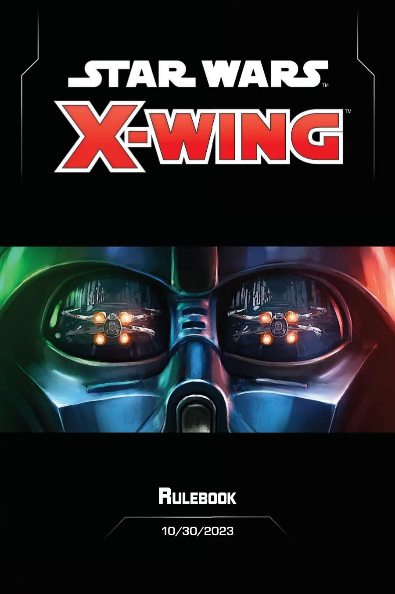
<figcaption>原版规则书 · 第 1 页（点击图片放大）</figcaption>
</figure>

<details class="mt-fold">
<summary>📝 第 1 页 AI 机翻对照（点击展开）</summary>
<div class="mt-body"><h2>规则书</h2>

<p>10/30/2023</p>

<p>TM</p>

<p>TM</p></div>
</details>

<figure>
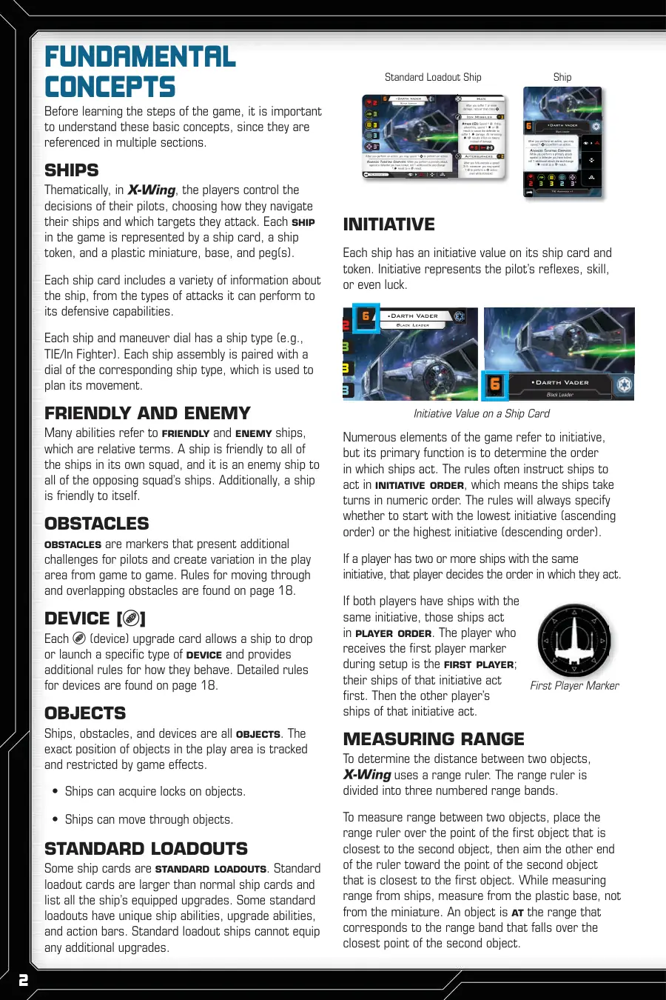
<figcaption>原版规则书 · 第 2 页（点击图片放大）</figcaption>
</figure>

<details class="mt-fold">
<summary>📝 第 2 页 AI 机翻对照（点击展开）</summary>
<div class="mt-body"><p>) 4 3 | 󲁁󲁁 | 3</p>

<p>󲈮󲈮3</p>

<p>󲈮󲈮2</p>

<p>󲈫󲈮3</p>

<p>2-3</p>

<p>󲈫󲈮2</p>

<h2>憎恨</h2>

<p>攻击 (󲁁󲁁): 消耗 1 󲈮󲈮。如果这次攻击命中，消耗 1 个 󲁧󲁧 或 󲁨󲁨 结果来使防御者承受 1 点 󲁧󲁧 伤害。所有剩余的 󲁧󲁧/󲁨󲁨 结果会造成离子指示物而非伤害。</p>

<p>在你执行一个行动后，你可以消耗 1 个 ? 来执行一个行动。</p>

<h2>高级目标计算机：当你对一个已锁定的防御者执行主要攻击时，投掷 1 个额外的骰子并将 1 个 󲁧󲁧 结果改为 󲁨󲁨 结果。</h2>

<h2>TIE 高级 X1</h2>

<p>在你承受 1 点或更多伤害后，恢复相应数量的 ?。</p>

<h2>黑色领袖</h2>

<p>•达斯·维达</p>

<p>在你完全执行一个速度 3-5 的机动后，你可以消耗 1 󲈮󲈮 来执行一个  行动，即使处于压力状态。</p>

<h2>加力燃烧室</h2>

<h2>离子导弹</h2>

<h2>TIE 高级 X1</h2>

<p>•达斯·维达</p>

<p>黑色领袖</p>

<p>在你执行一个行动后，你可以消耗 1 个 ? 来执行一个行动。</p>

<h2>高级目标计算机：</h2>

<p>当你对一个已锁定的防御者执行主要攻击时，投掷 1 个额外的攻击骰子并将 1 个 󲁧󲁧 结果改为 󲁨󲁨 结果。</p>

<p>󲁁󲁁</p>

<p>) 4 3</p>

<p>󲈫󲈮</p>

<h2>基础</h2>

<h2>概念</h2>

<p>在学习游戏步骤之前，理解这些基本概念很重要，因为它们在多个部分中被引用。</p>

<h2>飞船</h2>

<p>从主题上讲，在 X-Wing 中，玩家控制他们飞行员的决策，选择如何导航飞船以及攻击哪些目标。游戏中的每艘 SHIP 都由飞船卡牌、飞船指示物、塑料模型、底座和插针表示。每艘飞船卡牌包含关于飞船的各种信息，从它可以执行的攻击类型到其防御能力。</p>

<p>每艘飞船和机动拨盘都有一个飞船类型（例如，TIE/ln 战斗机）。每艘飞船组件与相应飞船类型的拨盘配对，用于规划其移动。</p>

<h2>友方和敌方</h2>

<p>许多能力提到了 FRIENDLY 和 ENEMY 飞船，这些是相对术语。一艘飞船对自己小队中的所有飞船都是友方的，而对敌方小队的所有飞船都是敌方的。此外，一艘飞船对自己也是友方的。</p>

<h2>障碍物</h2>

<p>OBSTACLES 是为飞行员提供额外挑战并在游戏区域中创造变化的标记。穿过和重叠障碍物的规则在第 18 页。</p>

<h2>设备 []</h2>

<p>每张 （设备）升级卡允许飞船投放或发射特定类型的 DEVICE，并提供关于它们如何行为的额外规则。设备的详细规则在第 18 页。</p>

<h2>物体</h2>

<p>飞船、障碍物和设备都是 OBJECTS。物体在游戏区域中的确切位置由游戏效果跟踪和限制。</p>

<p>• 飞船可以锁定物体。</p>

<p>• 飞船可以穿过物体。</p>

<h2>标准配置</h2>

<p>一些飞船卡牌是 STANDARD LOADOUTS。标准</p>

<p>&lt;!--page:N--&gt;</p>

<p>装备卡比普通的飞船卡更大，并列出了飞船装备的所有升级。一些标准装备拥有独特的飞船能力、升级能力和行动条。标准装备的飞船无法装备任何额外的升级。</p>

<h2>主动性</h2>

<p>每艘飞船的飞船卡和指示物上都有一个主动性值。主动性代表驾驶员的反应能力、技巧，甚至是运气。</p>

<p>游戏的多个元素都引用了主动性，但其主要功能是确定飞船行动的顺序。规则通常指示飞船按主动性顺序行动，这意味着飞船按数字顺序轮流行动。规则总是会指定是从最低主动性开始（升序）还是从最高主动性开始（降序）。</p>

<p>如果一个玩家有两艘或更多具有相同主动性的飞船，该玩家决定它们行动的顺序。</p>

<p>如果两个玩家都有具有相同主动性的飞船，这些飞船按玩家顺序行动。在设置期间获得第一玩家标记的玩家是第一玩家；他们具有该主动性的飞船先行动。然后是另一个玩家的具有该主动性的飞船行动。</p>

<h2>测量距离</h2>

<p>为了确定两个物体之间的距离，X-Wing使用距离尺。距离尺分为三个带编号的距离段。</p>

<p>要测量两个物体之间的距离，将距离尺放在第一个物体上最靠近第二个物体的点上，然后将尺子的另一端对准第二个物体上最靠近第一个物体的点。在测量飞船之间的距离时，从塑料底座测量，而不是从模型测量。一个物体处于与落在第二个物体最近点上的距离段相对应的距离。</p>

<p>第一玩家标记</p>

<p>第一玩家标记</p>

<p>标准装备飞船</p>

<p>飞船</p>

<p>6󲈫</p>

<h2>黑队队长</h2>

<p>•达斯·维达</p>

<p>•达斯·维达</p>

<p>黑队队长</p>

<p>飞船卡上的主动性值</p></div>
</details>

<figure>
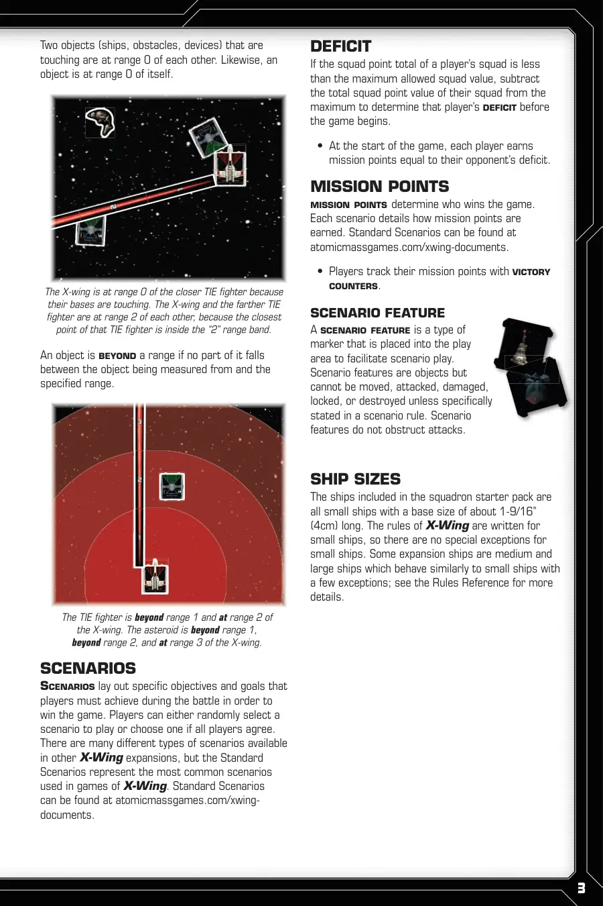
<figcaption>原版规则书 · 第 3 页（点击图片放大）</figcaption>
</figure>

<details class="mt-fold">
<summary>📝 第 3 页 AI 机翻对照（点击展开）</summary>
<div class="mt-body"><h2>亏损</h2>

<p>如果玩家小队的战力点总数小于允许的最大小队价值，则将该玩家小队的总战力点价值从最大值中减去，以确定该玩家在游戏开始前的亏损值。</p>

<p>• 在游戏开始时，每位玩家获得的任务点数等于其对手的亏损值。</p>

<h2>任务点数</h2>

<p>任务点数决定游戏的胜负。每个场景都详细说明了如何获得任务点数。标准场景可以在 atomicmassgames.com/xwing-documents 找到。</p>

<p>• 玩家使用胜利指示物追踪他们的任务点数。</p>

<h2>场景特性</h2>

<p>场景特性是一种放置在游戏区域中的标记类型，用于促进场景游戏。</p>

<p>场景特性是物体，但除非场景规则中特别说明，否则不能被移动、攻击、损坏、锁定或摧毁。场景特性不阻碍攻击。</p>

<h2>飞船尺寸</h2>

<p>中队补充包中包含的飞船都是小型飞船，底座尺寸约为 1-9/16"（4厘米）长。《X-Wing》的规则是为小型飞船编写的，因此小型飞船没有特殊例外。一些扩展包中的飞船是中型和大型飞船，它们与小型飞船的行为相似，但有一些例外；更多细节请参见规则参考。</p>

<p>两个相互接触的物体（飞船、障碍物、装置）彼此处于 0 距离。同样，一个物体与自身处于 0 距离。</p>

<p>如果一个物体的任何部分都没有落在被测量的物体和指定距离之间，则该物体超出了该距离范围。</p>

<h2>场景</h2>

<p>场景设定了玩家在战斗期间必须实现的特定目标和目标，以赢得游戏。玩家可以随机选择一个场景进行游戏，或者在所有玩家同意的情况下选择一个场景。</p>

<p>在其他《X-Wing》扩展包中有许多不同类型的场景，但标准场景代表了《X-Wing》游戏中使用最常见场景。标准场景可以在 atomicmassgames.com/xwing-documents 找到。</p>

<p>X翼战斗机与较近的 TIE 战斗机处于 0 距离，因为它们的底座相互接触。X翼战斗机与较远的 TIE 战斗机彼此处于 2 距离，因为该 TIE 战斗机的最近点位于"2"距离环内。TIE 战斗机超出了 1 距离，并与 X翼战斗机处于 2 距离。小行星超出了 1 距离，超出了 2 距离，并与 X翼战斗机处于 3 距离。</p></div>
</details>

<figure>
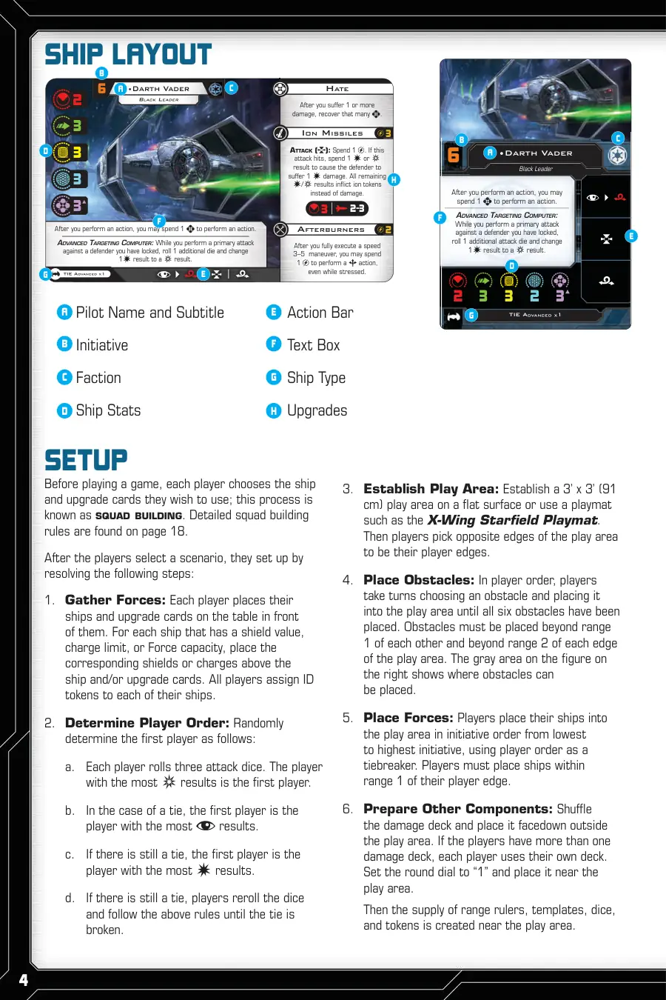
<figcaption>原版规则书 · 第 4 页（点击图片放大）</figcaption>
</figure>

<details class="mt-fold">
<summary>📝 第 4 页 AI 机翻对照（点击展开）</summary>
<div class="mt-body"><p>) 4 3 |󲁁󲁁| 3</p>

<p></p>

<p></p>

<p>󲈮󲈮3</p>

<p>󲈮󲈮2</p>

<p>󲈮󲈮3</p>

<p>󲈮󲈮2</p>

<p>󲈫󲈫3</p>

<p>2-3</p>

<p>󲈫󲈫2</p>

<h2>憎恨</h2>

<p>攻击 (󲁁󲁁): 消耗 1 󲈮󲈮。如果这次攻击命中，消耗 1 个 󲁧󲁧 或 󲁨󲁨 结果来使防御者承受 1 点 󲁧󲁧 伤害。所有剩余的 󲁧󲁧/󲁨󲁨 结果造成离子指示物而非伤害。</p>

<p>在你执行一个行动后，你可以消耗 1 个 ? 来执行一个行动。</p>

<p>高级目标计算机：当你对一个已锁定的防御者执行主要攻击时，投掷 1 个额外的骰子并将 1 个 󲁧󲁧 结果改为 󲁨󲁨 结果。</p>

<h2>TIE 先进型 X1</h2>

<p>在你承受 1 点或更多伤害后，恢复相应数量的 ?。</p>

<h2>黑色领袖</h2>

<p>•达斯·维达</p>

<p>在你完全执行一个速度 3-5 的机动后，你可以消耗 1 个 󲈮󲈮 来执行一个  行动，即使处于压力状态。</p>

<h2>加力燃烧室</h2>

<h2>离子导弹</h2>

<h2>TIE 先进型 X1</h2>

<p>•达斯·维达</p>

<p>黑色领袖</p>

<p>在你执行一个行动后，你可以消耗 1 个 ? 来执行一个行动。</p>

<h2>高级目标计算机：</h2>

<p>当你对一个已锁定的防御者执行主要攻击时，投掷 1 个额外的攻击骰子并将 1 个 󲁧󲁧 结果改为 󲁨󲁨 结果。</p>

<p>󲁁󲁁</p>

<p>) 4 3</p>

<p>󲈫󲈫</p>

<p>A</p>

<p>A</p>

<p>C</p>

<p>B</p>

<p>C</p>

<p>B</p>

<p>D</p>

<p>D</p>

<p>E</p>

<p>F</p>

<p>G</p>

<p>H</p>

<p>G</p>

<p>F</p>

<p>E</p>

<p>A</p>

<p>E</p>

<p>B</p>

<p>F</p>

<p>C</p>

<p>G</p>

<p>D</p>

<p>H</p>

<p>飞行员姓名和副标题</p>

<p>行动优先级</p>

<p>派系</p>

<p>飞船数据</p>

<p>行动栏</p>

<p>文本框</p>

<p>飞船类型</p>

<p>升级</p>

<h2>设置</h2>

<p>在开始游戏前，每位玩家选择他们想要使用的飞船和升级卡；这个过程被称为编队构建。详细的编队构建规则在第 18 页。</p>

<p>玩家选择一个场景后，通过解决以下步骤进行设置：</p>

<h3>1. 集结部队：每位玩家将他们的飞船和升级卡放在他们面前的桌子上。对于每个具有护盾值、电荷限制或原力容量的飞船，将相应的护盾或电荷放在飞船和/或升级卡上方。所有玩家为他们的每艘飞船分配 ID 指示物。</h3>

<h3>2. 确定玩家顺序：按如下方式随机确定第一位玩家：</h3>

<p>a. 每位玩家投掷三个攻击骰。拥有最多 &amp; 结果的玩家是第一位玩家。</p>

<p>b. 如果平局，拥有最多 ) 结果的玩家是第一位玩家。</p>

<p>c. 如果仍然平局，拥有最多 % 结果的玩家是第一位玩家。</p>

<p>d. 如果仍然平局，玩家重新投掷骰子并遵循上述规则直到打破平局。</p>

<ol>
  <li>建立游戏区域：在平坦表面上建立一个 3' x 3' (91 厘米) 的游戏区域，或使用游戏垫如 X-Wing 星域游戏垫。</li>
</ol>

<p>然后玩家选择游戏区域的相对边缘作为他们的玩家边缘。</p>

<h3>4. 放置障碍物：按玩家顺序，玩家轮流选择一个障碍物并将其放入游戏区域，直到所有六个障碍物都被放置。障碍物必须放置在彼此范围 1 之外，并且距离游戏区域的每个边缘范围 2 之外。右侧图中灰色区域显示障碍物可以放置的位置。</h3>

<h3>5. 部署兵力：玩家按行动顺序从低到高部署飞船，玩家顺序作为平局决胜条件。玩家必须将飞船部署在其玩家边缘1格范围内。</h3>

<ol>
  <li>准备其他组件：洗混伤害牌库并将其面朝下放置在游戏区域外。如果玩家有多副伤害牌库，每位玩家使用自己的牌库。将轮盘设置为"1"并将其放置在游戏区域附近。</li>
</ol>

<p>然后，在游戏区域附近准备范围尺、模板、骰子和指示物的供应。</p>

<h2>飞船布局</h2></div>
</details>

<figure>
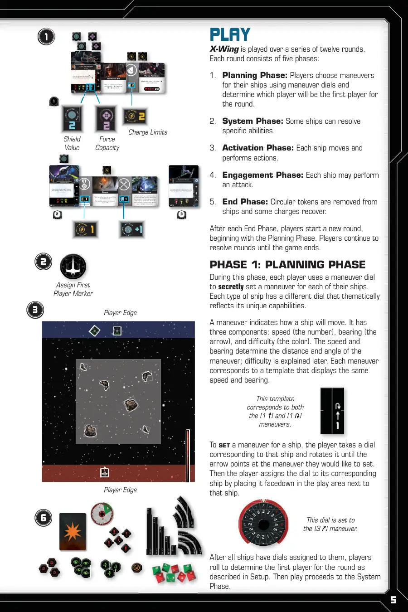
<figcaption>原版规则书 · 第 5 页（点击图片放大）</figcaption>
</figure>

<details class="mt-fold">
<summary>📝 第 5 页 AI 机翻对照（点击展开）</summary>
<div class="mt-body"><p>󲈮󲈮</p>

<p>󲈫󲈫4</p>

<p>2-3</p>

<p>󲁏󲁏</p>

<p>攻击 (ATTACK): 消耗 1 󲈮󲈮。将 1 个 󲁧󲁧 结果变为 󲁨󲁨 结果。</p>

<h2>质子鱼雷</h2>

<p>+1</p>

<p>󲈮</p>

<p>󲁏</p>

<p>当你执行特殊攻击时，你可以花费 1 个 ? 来忽略 ) 或 󲁁󲁁 的要求。</p>

<h2>本能瞄准</h2>

<p>•卢克·天行者 (Luke Skywalker)</p>

<p>红色五号 (Red Five)</p>

<h2>T-65 X翼战斗机</h2>

<p>当你成为防御者后（在骰子投掷前），你可以恢复 1 个 ?。</p>

<p>󲈫󲈫</p>

<p>󲁁󲁁</p>

<p>)</p>

<p>󲁏</p>

<p>偏转护盾是大多数轻型战斗机以外大多数星际飞船的重要防线。虽然增强飞船的护盾容量可能代价高昂，但几乎所有最自信或鲁莽的飞行员都看到了这种投资的价值。</p>

<h2>护盾升级</h2>

<p></p>

<p>󲈮󲈮1</p>

<p>当你防御时，你可以花费 1 󲈮󲈮 来重新投掷 1 防御骰。</p>

<p>在你完全执行一个红色机动后，恢复 1 󲈮󲈮。</p>

<h2>难以捉摸</h2>

<h2>小型或中型飞船</h2>

<p>󲈮</p>

<h2>小型 O</h2>

<p>•瓦伦·鲁多 (Valen Rudor)</p>

<p>自夸男爵 (Braggadocious Baron)</p>

<h2>TIE/LN 战斗机</h2>

<p>当友方飞船在距离 0-1 处防御后（如果已解决任何伤害），你可以执行一个行动。</p>

<p>󲈫󲈫</p>

<p></p>

<p>)</p>

<p>银河帝国使用由西纳舰队系统 (Sienar Fleet Systems) 开发并以惊人数量生产的快速灵活的 TIE/ln 作为其主要星际战斗机。</p>

<p>学院飞行员 (Academy Pilot)</p>

<p>TIE/ln 战斗机</p>

<h2>© LFL  © FFG</h2>

<p>5 X</p>

<p>󲈮</p>

<h2>中型 (MED)</h2>

<p>玩家优势 (Player Edge)</p>

<p>玩家优势 (Player Edge)</p>

<p>分配先手玩家标记 (Assign First Player Marker)</p>

<p>护盾值 (Shield Value)</p>

<p>原力容量 (Force Capacity)</p>

<p>充能限制 (Charge Limits)</p>

<h2>游戏进行 (PLAY)</h2>

<p>X-Wing 游戏进行十二个回合。每个回合包含五个阶段：</p>

<h3>1. 规划阶段：玩家使用机动拨盘为其飞船选择机动，并确定哪位玩家将成为该回合的先手玩家。</h3>

<h3>2. 系统阶段：某些飞船可以解决特定能力。</h3>

<h3>3. 激活阶段：每艘飞船移动并执行行动。</h3>

<h3>4. 交战阶段：每艘飞船可以执行攻击。</h3>

<h3>5. 结束阶段：圆形标记从飞船上移除，一些充能恢复。</h3>

<p>在每个结束阶段后，玩家开始新一轮，从规划阶段开始。玩家继续进行回合直到游戏结束。</p>

<h2>阶段 1：规划阶段</h2>

<p>在此阶段，每位玩家使用机动拨盘秘密为其每艘飞船设置机动。每种类型的飞船有不同的拨盘，主题上反映了其独特能力。</p>

<p>机动表示飞船将如何移动。它有三个组成部分：速度（数字）、方向（箭头）和难度（颜色）。速度和方向决定机动的距离和角度；难度将在后面解释。每个机动对应一个显示相同速度和方向的模板。</p>

<p>要为飞船设置机动，玩家取一个对应该飞船的拨盘并旋转它，直到箭头指向他们想要设置的机动。然后玩家通过将拨盘面朝下放置在游戏区域中该飞船旁边，将其分配给相应的飞船。</p>

<p>当所有飞船都分配了拨盘后，玩家</p>

<p>按照设置中描述的方式掷骰子来确定本轮的起始玩家。然后游戏进入系统阶段。</p>

<p>这个模板对应</p>

<p>[1 ] 和 [1 "]</p>

<p>两种机动。</p>

<p>这个拨盘设置为</p>

<p>[3 ] 机动。</p></div>
</details>

<figure>
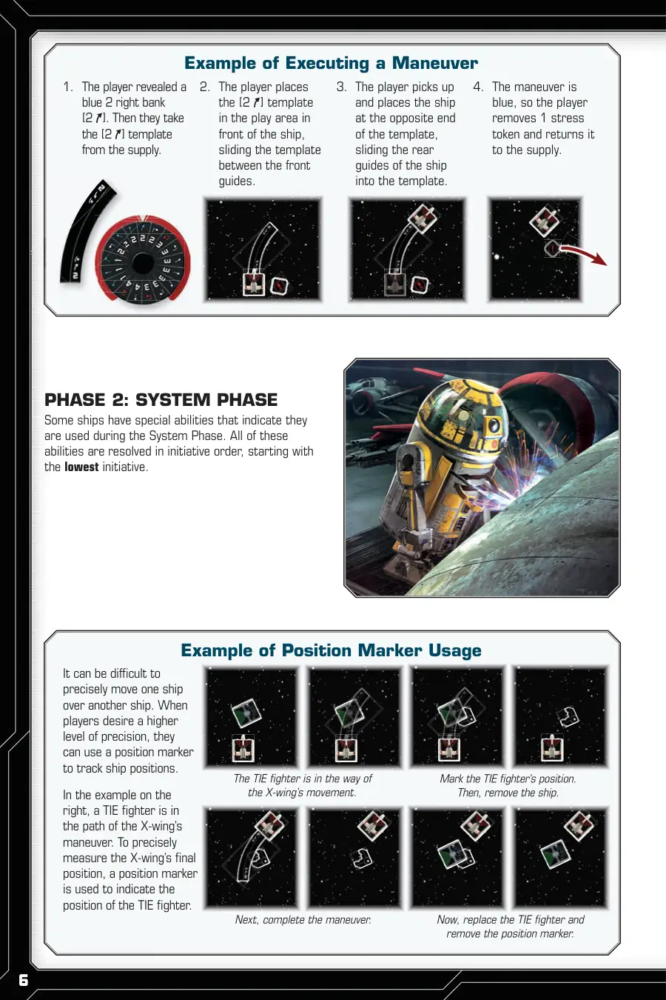
<figcaption>原版规则书 · 第 6 页（点击图片放大）</figcaption>
</figure>

<details class="mt-fold">
<summary>📝 第 6 页 AI 机翻对照（点击展开）</summary>
<div class="mt-body"><p>执行机动示例</p>

<h3>1. 玩家展示了一张</h3>

<p>蓝色2右转弯</p>

<p>[2 ]。然后他们从</p>

<p>供应区取走[2 ]模板。</p>

<h3>2. 玩家将[2 ]模板</h3>

<p>放置在飞船前方的</p>

<p>游戏区域中，将模板</p>

<p>滑入前导轨之间。</p>

<h3>3. 玩家拾起并放置</h3>

<p>飞船在模板的另一端，</p>

<p>将飞船的后导轨</p>

<p>滑入模板中。</p>

<h3>4. 机动是蓝色的，</h3>

<p>所以玩家移除1个</p>

<p>压力指示物并将其</p>

<p>归还到供应区。</p>

<p>位置标记使用示例</p>

<p>将一艘飞船精确地</p>

<p>移动到另一艘飞船上方</p>

<p>可能很困难。当玩家</p>

<p>需要更高精度时，</p>

<p>他们可以使用位置标记</p>

<p>来追踪飞船位置。</p>

<p>在右侧的示例中，</p>

<p>一架TIE战斗机位于</p>

<p>X翼飞船的机动路径上。</p>

<p>为了精确测量X翼的</p>

<p>最终位置，使用了一个</p>

<p>位置标记来指示TIE战斗机的位置。</p>

<p>TIE战斗机阻挡了X翼的移动。</p>

<p>接下来，完成机动。</p>

<p>现在，替换TIE战斗机并</p>

<p>移除位置标记。</p>

<p>标记TIE战斗机的位置。</p>

<p>然后，移除飞船。</p>

<h2>第2阶段：系统阶段</h2>

<p>一些飞船有特殊能力，</p>

<p>表明它们在系统阶段使用。</p>

<p>所有这些能力都按 initiative 顺序解决，</p>

<p>从最低 initiative 开始。</p></div>
</details>

<figure>
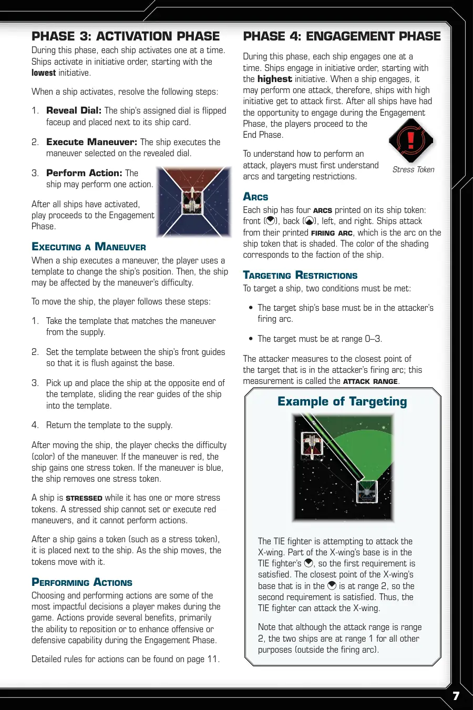
<figcaption>原版规则书 · 第 7 页（点击图片放大）</figcaption>
</figure>

<details class="mt-fold">
<summary>📝 第 7 页 AI 机翻对照（点击展开）</summary>
<div class="mt-body"><p>目标示例</p>

<p>TIE战斗机试图攻击X翼战机。X翼战机底座的一部分位于TIE战斗机的射击弧内，因此第一个要求得到满足。X翼底座位于射击弧内且最近的点处于2格距离，因此第二个要求得到满足。因此，TIE战斗机可以攻击X翼战机。</p>

<p>请注意，尽管攻击距离为2格，但出于所有其他目的（射击弧外），两艘飞船之间的距离为1格。</p>

<h2>第3阶段：激活阶段</h2>

<p>在此阶段，每艘飞船依次激活一艘。</p>

<p>飞船按行动顺序激活，从最低行动值的飞船开始。</p>

<p>当一艘飞船激活时，执行以下步骤：</p>

<ol>
  <li>揭示拨盘：将分配给该飞船的拨盘翻至正面，放置在其飞船卡牌旁边。</li>
</ol>

<h3>2. 执行机动：飞船执行拨盘上选择的机动。</h3>

<h3>3. 执行行动：</h3>

<p>飞船可以执行一个行动。</p>

<p>所有飞船都激活后，游戏进入交战阶段。</p>

<h2>执行机动</h2>

<p>当飞船执行机动时，玩家使用模板来改变飞船的位置。然后，飞船可能会受到机动难度的影响。</p>

<p>要移动飞船，玩家遵循以下步骤：</p>

<h3>1. 从供应区中取出与机动相匹配的模板。</h3>

<ol>
  <li>将模板设置在飞船前导之间，使其与底座齐平。</li>
</ol>

<h3>3. 拾起飞船并将其放置在模板的另一端，将飞船的后导滑入模板中。</h3>

<ol>
  <li>将模板归还到供应区。</li>
</ol>

<p>移动飞船后，玩家检查机动的难度（颜色）。如果机动是红色的，飞船获得一个压力指示物。如果机动是蓝色的，飞船移除一个压力指示物。</p>

<p>当飞船拥有一个或多个压力指示物时，它处于受压状态。受压的飞船不能设置或执行红色机动，也不能执行行动。</p>

<p>飞船获得指示物（如压力指示物）后，将其放置在飞船旁边。当飞船移动时，指示物也随之移动。</p>

<h2>执行行动</h2>

<p>选择和执行行动是玩家在游戏过程中做出的最具影响力的决定之一。行动提供多种好处，主要是在交战阶段重新定位或增强进攻或防御能力的能力。行动的详细规则可以在第11页找到。</p>

<p>压力指示物</p>

<h2>第4阶段：交战阶段</h2>

<p>在此阶段，每艘飞船依次交战一艘。飞船按行动顺序交战，从最高行动值的飞船开始。当飞船交战时，它可以执行一次攻击，因此，高行动值的飞船可以率先攻击。在交战阶段所有飞船都有机会交战后，玩家进入结束阶段。</p>

<p>要了解如何执行攻击，玩家首先必须理解弧线和目标限制。</p>

<h2>弧线</h2>

<p>每艘飞船在其飞船指示物上都印有四条弧线：</p>

<p>前弧(;)、后弧(:)、左弧和右弧。飞船从其标示的射击弧线进行攻击，这是飞船指示物上被阴影覆盖的弧线。阴影的颜色对应于飞船的派系。</p>

<h2>瞄准限制</h2>

<p>要瞄准一艘飞船，必须满足两个条件：</p>

<p>• 目标飞船的底座必须在攻击者的射击弧线内。</p>

<p>• 目标必须在射程0-3范围内。</p>

<p>攻击者测量到目标上位于攻击者射击弧线内的最近点；这个测量距离被称为攻击射程。</p></div>
</details>

<figure>
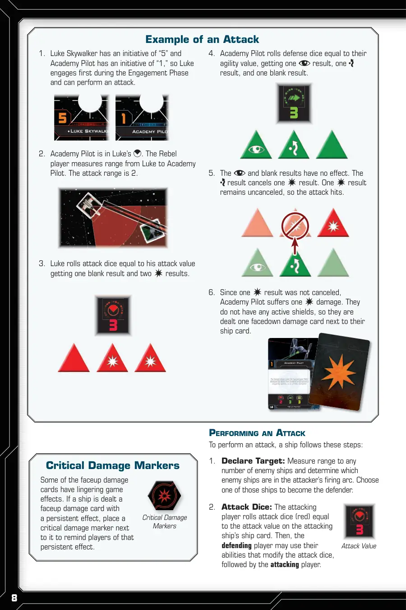
<figcaption>原版规则书 · 第 8 页（点击图片放大）</figcaption>
</figure>

<details class="mt-fold">
<summary>📝 第 8 页 AI 机翻对照（点击展开）</summary>
<div class="mt-body"><p>攻击示例</p>

<ol>
  <li>卢克·天行者（Luke Skywalker）的先攻值为"5"，而学院飞行员（Academy Pilot）的先攻值为"1"，因此在交战阶段卢克首先进行交战并可以执行攻击。</li>
  <li>学院飞行员位于卢克的攻击弧内。反抗军玩家测量从卢克到学院飞行员的距离。攻击距离为2。</li>
</ol>

<h3>3. 卢克掷出等于其攻击值的攻击骰子，得到一个空白结果和两个%结果。</h3>

<h3>4. 学院飞行员掷出等于其敏捷值的防御骰子，得到一个)结果，一个结果和一个空白结果。</h3>

<ol>
  <li>)和空白结果没有效果。结果取消了一个%结果。还有一个%结果未被取消，因此攻击命中。</li>
  <li>由于有一个%结果未被取消，学院飞行员受到一个%伤害。他们没有任何激活的护盾，因此他们会在飞船卡旁边受到一张面朝下的伤害卡。</li>
</ol>

<p>银河帝国使用由西纳舰队系统（Sienar Fleet Systems）开发并以惊人数量生产的快速灵活的TIE/ln战斗机作为其主要星际战斗机。</p>

<p>学院飞行员</p>

<p>TIE/ln战斗机</p>

<h2>© LFL  © FFG</h2>

<p>n</p>

<h2>© LFL  © FFG</h2>

<p>致命伤害标记</p>

<p>一些面朝上的伤害卡有持续的游戏效果。如果一艘飞船受到一张带有持续效果的面朝上伤害卡，在其旁边放置一个致命伤害标记，以提醒玩家该持续效果。</p>

<p>致命伤害标记</p>

<h2>执行攻击</h2>

<p>要执行攻击，飞船需遵循以下步骤：</p>

<h3>1. 宣告目标：测量到任意数量敌方飞船的距离，并确定哪些敌方飞船在攻击者的攻击弧内。选择其中一艘飞船成为防御者。</h3>

<h3>2. 攻击骰子：攻击玩家掷出等于攻击者飞船卡上攻击值的攻击骰子（红色）。然后，防御玩家可以使用他们修改攻击骰子的能力，接着是攻击玩家。</h3>

<p>攻击值</p></div>
</details>

<figure>
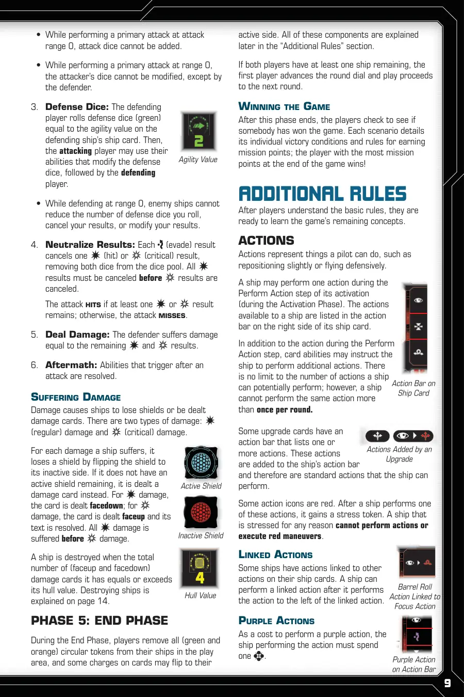
<figcaption>原版规则书 · 第 9 页（点击图片放大）</figcaption>
</figure>

<details class="mt-fold">
<summary>📝 第 9 页 AI 机翻对照（点击展开）</summary>
<div class="mt-body"><p>• 在执行攻击范围为0的主要攻击时，不能添加攻击骰子。</p>

<p>• 在执行攻击范围为0的主要攻击时，攻击者的骰子不能被修改，除非由防御者修改。</p>

<h3>3. 防御骰子：防御玩家掷出等于其飞船飞船卡上敏捷值的防御骰子（绿色）。然后，攻击玩家可以使用他们修改防御骰子的能力，接着是防御玩家。</h3>

<p>• 在防御范围为0时，敌方飞船不能减少你掷出的防御骰子数量、取消你的结果或修改你的结果。</p>

<ol>
  <li>中和结果：每个（闪避）结果取消一个%（命中）或&amp;（致命）结果，将两个骰子从骰子池中移除。所有%结果必须在&amp;结果被取消前被取消。</li>
</ol>

<p>如果至少有一个%或&amp;结果剩余，则攻击命中；否则，攻击未命中。</p>

<h3>5. 造成伤害：防御者承受等于剩余%和&amp;结果的伤害。</h3>

<h3>6. 结局：触发的攻击后能力被结算。</h3>

<h2>承受伤害</h2>

<p>伤害导致飞船失去护盾或受到伤害卡。有两种类型的伤害：%（常规）伤害和&amp;（致命）伤害。</p>

<p>对于飞船承受的每点伤害，它通过将护盾翻到其非激活面来失去一个护盾。如果没有剩余的激活护盾，则改为受到一张伤害卡。对于%伤害，卡牌面朝下发放；对于&amp;伤害，卡牌面朝上发放并结算其文本。所有%伤害在&amp;伤害前被承受。</p>

<p>当飞船拥有的（面朝上和面朝下的）伤害卡总数等于或超过其船体值时，飞船被摧毁。摧毁飞船在第14页有说明。</p>

<h2>第5阶段：结束阶段</h2>

<p>在结束阶段，玩家从游戏区域中的飞船上移除所有（绿色和橙色）圆形指示物，并且卡牌上的一些充能可能翻到其激活面。所有这些组件在后面的"附加规则"部分有说明。</p>

<p>如果两个玩家都至少有一艘飞船剩余，则第一玩家推进轮次指示器，游戏进入下一轮。</p>

<h2>赢得游戏</h2>

<p>此阶段结束后，玩家检查是否有人赢得了游戏。每个场景详细说明了其个人胜利条件和获得任务点的规则；游戏结束时拥有最多任务点的玩家获胜！</p>

<h2>附加规则</h2>

<p>在玩家理解基本规则后，他们就可以学习游戏的其余概念了。</p>

<h2>行动</h2>

<p>行动代表飞行员可以做的事情，例如稍微重新定位或防御性飞行。</p>

<p>一艘飞船在其激活期间（在激活阶段）的执行行动步骤中可以执行一个行动。飞船可用的行动列在其飞船卡上。</p>

<p>其飞船卡右侧的行动条。</p>

<p>除了执行行动步骤中的行动外，卡牌能力可能指示飞船执行额外行动。飞船可能执行的行动数量没有限制；然而，一艘飞船在每轮中不能执行相同的行动超过一次。</p>

<p>一些升级卡具有一个或多个行动的行动条。这些行动被添加到飞船的行动条上，因此是飞船可以执行的标准行动。</p>

<p>一些行动图标是红色的。飞船执行这些行动之一后，会获得一个压力指示物。由于任何原因而处于压力状态的飞船无法执行行动或执行红色机动。</p>

<h2>关联行动</h2>

<p>一些飞船的行动与其飞船卡上的其他行动相关联。飞船可以在执行关联行动左侧的行动后执行关联行动。</p>

<h2>紫色行动</h2>

<p>作为执行紫色行动的代价，执行该行动的飞船必须花费一个 󲈯󲈯。</p>

<p>飞船卡上的行动条</p>

<p>行动条上的紫色行动</p>

<p>a</p>

<p>,</p>

<p>te</p>

<p>m</p>

<p>横滚</p>

<p>与聚焦行动关联的行动</p>

<p>t</p>

<p>敏捷值</p>

<p>由升级卡添加的行动</p></div>
</details>

<figure>
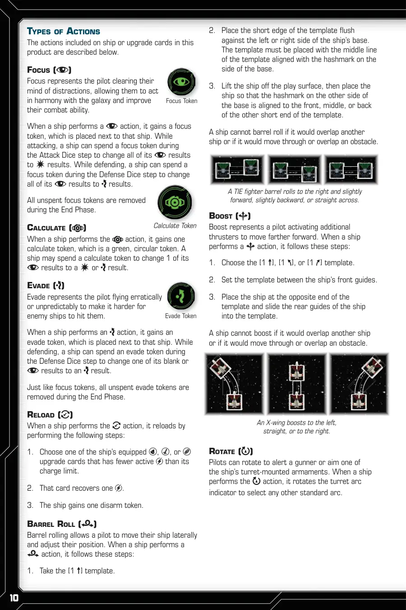
<figcaption>原版规则书 · 第 10 页（点击图片放大）</figcaption>
</figure>

<details class="mt-fold">
<summary>📝 第 10 页 AI 机翻对照（点击展开）</summary>
<div class="mt-body"><h2>行动类型</h2>

<p>本产品中飞船或升级卡牌上包含的行动描述如下。</p>

<h2>专注 ())</h2>

<p>专注代表飞行员清空思绪，排除干扰，使他们能够与宇宙和谐行动并提高他们的战斗能力。</p>

<p>当飞船执行 ) 行动时，它会获得一个专注指示物，放置在该飞船旁边。攻击时，飞船可以在攻击骰子步骤期间花费一个专注指示物，将其所有的 ) 结果改为 % 结果。防御时，飞船可以在防御骰子步骤期间花费一个专注指示物，将其所有的 ) 结果改为  结果。</p>

<p>所有未使用的专注指示物在结束阶段被移除。</p>

<h2>计算 (󲈥)</h2>

<p>当飞船执行 5 行动时，它获得一个计算指示物，这是一个绿色圆形指示物。飞船可以花费一个计算指示物将其 1 个 ) 结果改为 % 或  结果。</p>

<h2>闪避 ()</h2>

<p>闪避代表飞行员以不规则或不可预测的方式飞行，使敌方飞船更难击中他们。</p>

<p>当飞船执行  行动时，它获得一个闪避指示物，放置在该飞船旁边。防御时，飞船可以在防御骰子步骤期间花费一个闪避指示物，将其一个空白或 ) 结果改为  结果。</p>

<p>就像专注指示物一样，所有未使用的闪避指示物在结束阶段被移除。</p>

<h2>重新装填 (󲈣)</h2>

<p>当飞船执行 1 行动时，它通过执行以下步骤重新装填：</p>

<ol>
  <li>选择飞船装备的一张 </li>
</ol>

<p>, , 或  升级卡牌，其激活的 &gt; 少于其充电上限。</p>

<ol>
  <li>该卡牌恢复一个 &gt;。</li>
  <li>飞船获得一个解除武装指示物。</li>
</ol>

<h2>横滚 (3)</h2>

<p>横滚允许飞行员横向移动飞船并调整位置。当飞船执行 3 行动时，它遵循以下步骤：</p>

<ol>
  <li>取出 [1 ] 模板。</li>
</ol>

<p>专注指示物</p>

<p>专注指示物</p>

<p>闪避指示物</p>

<p>闪避指示物</p>

<ol>
  <li>将模板的短边与飞船底座的左侧或右侧对齐。模板必须放置，使其中心线与底座侧面的标记对齐。</li>
</ol>

<h3>3. 将飞船从游戏表面上抬起，然后将飞船放置，使底座另一侧的标记与模板另一短端的前、中或后对齐。</h3>

<p>如果飞船会与其他飞船重叠，或者会穿过或与障碍物重叠，则不能进行横滚。</p>

<h2>加速 ()</h2>

<p>加速代表飞行员激活额外推进器以向前移动更远。当飞船执行  行动时，它遵循以下步骤：</p>

<ol>
  <li>选择 [1 ]、[1 ] 或 [1 ] 模板。</li>
  <li>将模板设置在飞船前导之间。</li>
</ol>

<h3>3. 将飞船放置在模板的另一端，并将飞船的后导滑入模板中。</h3>

<p>如果飞船会与其他飞船重叠，则不能加速。</p>

<p>或者如果它会穿过或与一个障碍物重叠。</p>

<h2>旋转 (+)</h2>

<p>飞行员可以旋转以提醒炮手或瞄准飞船的炮塔武器。当飞船执行 + 行动时，它会旋转炮塔弧线指示器以选择任何其他标准弧线。</p>

<p>一架 TIE 战斗机向右进行桶滚，稍微向前、稍微向后或笔直穿过。</p>

<p>一架 X 翼战机向左、笔直或向右进行加速。</p>

<p>计算指示物</p></div>
</details>

<figure>
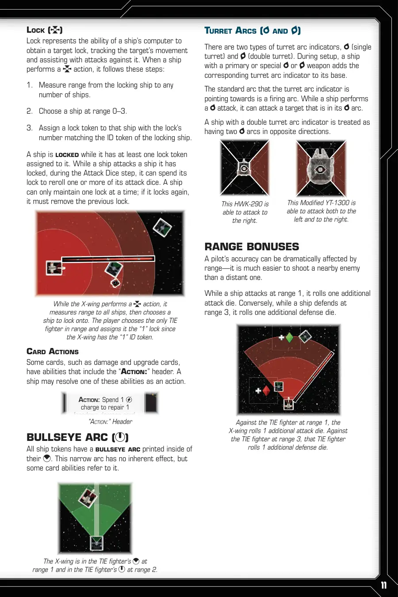
<figcaption>原版规则书 · 第 11 页（点击图片放大）</figcaption>
</figure>

<details class="mt-fold">
<summary>📝 第 11 页 AI 机翻对照（点击展开）</summary>
<div class="mt-body"><h2>锁定 (󲁁)</h2>

<p>锁定代表飞船计算机获取目标锁的能力，追踪目标的移动并协助对其攻击。当飞船执行 * 行动时，它遵循以下步骤：</p>

<h3>1. 从锁定飞船测量到任意数量的飞船的距离。</h3>

<ol>
  <li>选择一个距离为0-3的飞船。</li>
  <li>为该飞船分配一个锁定指示物，锁定的数字与锁定飞船的ID指示物相匹配。</li>
</ol>

<p>飞船拥有至少一个分配给它的锁定指示物时，它就被锁定了。当飞船攻击它锁定的飞船时，在攻击骰子阶段，它可以花费它的锁定来重掷一个或多个攻击骰子。飞船一次只能维持一个锁定；如果它再次锁定，必须移除之前的锁定。</p>

<h2>卡牌行动</h2>

<p>一些卡牌，如伤害和升级卡牌，具有包含"行动："标题的能力。飞船可以将这些能力之一作为行动来执行。</p>

<h2>瞄准弧 (9)</h2>

<p>所有飞船指示物在其 内部印有一个瞄准弧。这个狭窄的弧本身没有固有效果，但一些卡牌能力会引用它。</p>

<p>X翼战斗机在距离1时位于TIE战斗机的 内，在距离2时位于TIE战斗机的9内。</p>

<p>当X翼战斗机执行 * 行动时，它测量到所有飞船的距离，然后选择一个飞船进行锁定。玩家选择范围内唯一的TIE战斗机，并为其分配"1"锁定，因为X翼战斗机有"1" ID指示物。</p>

<p>"行动："标题</p>

<p>行动：花费1 󲈮 充能来修复1张面朝下的伤害卡牌</p>

<h2>炮塔弧 (= 和 &lt;)</h2>

<p>有两种类型的炮塔弧指示器，=（单炮塔）和&lt;（双炮塔）。在设置阶段，拥有主要或特殊 = 或 &lt; 武器的飞船会将其相应的炮塔弧指示器添加到其底座上。</p>

<p>炮塔弧指示器指向的标准弧线是一个射击弧。当飞船执行 = 攻击时，它可以攻击在其 = 弧线内的目标。</p>

<p>拥有双炮塔弧指示器的飞船被视为在相反方向有两个 = 弧线。</p>

<h2>距离加成</h2>

<p>飞行员的准确性可能受到距离的显著影响——射击附近的敌人比射击远处的敌人容易得多。</p>

<p>当飞船在距离1处攻击时，它多掷一个攻击骰子。相反，当飞船在距离3处防御时，它多掷一个防御骰子。</p>

<p>这个修改过的YT-1300</p>

<p>能够向左和向右攻击。</p>

<p>这个HWK-290</p>

<p>能够向右攻击。</p>

<p>对距离1处的TIE战斗机，X翼战斗机多掷1个攻击骰子。对距离3处的TIE战斗机，该TIE战斗机多掷1个防御骰子。</p></div>
</details>

<figure>
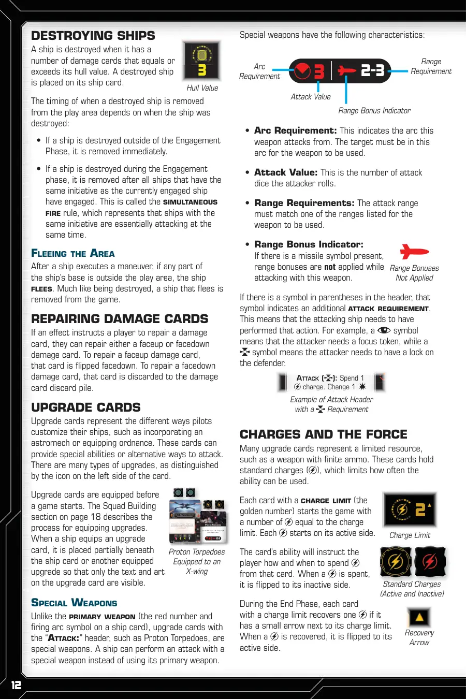
<figcaption>原版规则书 · 第 12 页（点击图片放大）</figcaption>
</figure>

<details class="mt-fold">
<summary>📝 第 12 页 AI 机翻对照（点击展开）</summary>
<div class="mt-body"><p>特殊武器具有以下特性：</p>

<p>• 弧度要求：这表示武器攻击的弧度。目标必须位于此弧度内才能使用该武器。</p>

<p>• 攻击值：这是攻击者投掷的攻击骰子数量。</p>

<p>• 射程要求：攻击射程必须与武器列出的射程之一匹配才能使用。</p>

<p>• 射程加成指示器：</p>

<p>如果存在导弹符号，使用此武器攻击时不应用射程加成。</p>

<p>如果标题中有括号内的符号，该符号表示额外的攻击要求。</p>

<p>这意味着攻击飞船需要执行过该行动。例如，)符号表示攻击者需要聚焦指示物，而*符号表示攻击者必须锁定防御者。</p>

<h2>充能与原力</h2>

<p>许多升级牌代表有限资源，如弹药有限的武器。这些牌持有标准充能(&gt;)，限制了能力使用的频率。</p>

<p>每张有充能上限(CHARGE LIMIT，金色数字)的牌在游戏开始时拥有数量等于充能上限的&gt;。每个&gt;开始时处于激活面。</p>

<p>牌面能力会指示玩家如何以及何时花费该牌上的&gt;。当&gt;被花费时，它会被翻转到非激活面。</p>

<p>在结束阶段，每张有充能上限的牌如果其充能限制旁边有小箭头，则恢复一个&gt;。当&gt;被恢复时，它会被翻转到激活面。</p>

<p>射程加成不适用</p>

<p>带*要求的攻击标题示例</p>

<h2>攻</h2>

<p>攻</p>

<p>攻</p>

<p>击</p>

<p>击</p>

<p>(󲁁): 花费1</p>

<p>󲈮充能。将1 󲁧</p>

<p>伤害转化为</p>

<p>󲁨</p>

<p>伤害，如果</p>

<p>充能限制</p>

<p>标准充能</p>

<p>(激活和非激活)</p>

<p>充能</p>

<p>标准充能</p>

<p>恢复箭头</p>

<h2>摧毁飞船</h2>

<p>当飞船的伤害牌数量等于或超过其船体值时，飞船被摧毁。被摧毁的飞船被放置在其飞船牌上。</p>

<p>被摧毁的飞船何时从游戏区域移除取决于飞船何时被摧毁：</p>

<p>• 如果飞船在交战阶段外被摧毁，则立即移除。</p>

<p>• 如果飞船在交战阶段内被摧毁，则在所有与当前交战飞船具有相同 initiative 的飞船完成交战后才移除。这称为同时开火规则(SIMULTANEOUS FIRE)，表示具有相同 initiative 的飞船实际上是同时攻击的。</p>

<h2>离开区域</h2>

<p>飞船执行机动后，如果飞船底座的任何部分位于游戏区域外，则飞船逃离(FLEES)。与被摧毁类似，逃离的飞船会从游戏中移除。</p>

<h2>修复伤害牌</h2>

<p>如果效果指示玩家修复一张伤害牌，他们可以修复面朝上或面朝下的伤害牌。要修复面朝上的伤害牌，将该牌翻转为面朝下。要修复面朝下的</p>

<h2>升级卡</h2>

<p>升级卡代表飞行员定制其飞船的不同方式，例如整合宇航机器人或装备军备。这些卡牌可以提供特殊能力或替代的攻击方式。有多种类型的升级卡，通过卡牌左侧的图标来区分。</p>

<p>升级卡在游戏开始前装备。第18页的"编队构建"部分描述了装备升级卡的过程。</p>

<p>当一艘飞船装备升级卡时，将其部分放置在飞船卡牌或另一张已装备的升级卡下方，以便只能看到升级卡上的文本和图像。</p>

<h2>特殊武器</h2>

<p>与"主武器"（飞船卡牌上的红色数字和射击弧符号）不同，带有"攻击："标题的升级卡，如质子鱼雷，是特殊武器。飞船可以使用特殊武器进行攻击，而不是使用其主武器。</p>

<p>船体值</p>

<p>󲈮󲈮</p>

<p>󲈫󲈫4</p>

<p>2-3</p>

<p>󲁏󲁏</p>

<p>攻击 (󲁁󲁁): 消耗1个 󲈮󲈮。将1个 󲁧󲁧 结果变为 󲁨󲁨 结果。</p>

<h2>质子鱼雷</h2>

<h2>攻</h2>

<p>攻</p>

<p>攻</p>

<p>由英康公司设计的T-65 X-wing迅速证明自己是银河系中最有效和最 versatile 的军用车辆之一，也是反抗军的福音。</p>

<p>蓝色中队护航</p>

<p>T-65 X-wing</p>

<h2>© LFL  © FFG</h2>

<p>质子鱼雷</p>

<p>装备到一架</p>

<p>X-wing上</p>

<p>; 3</p>

<p>2-3</p>

<p>攻击值</p>

<p>射程</p>

<p>需求</p>

<p>弧线需求</p>

<p>射程加成指示器</p></div>
</details>

<figure>
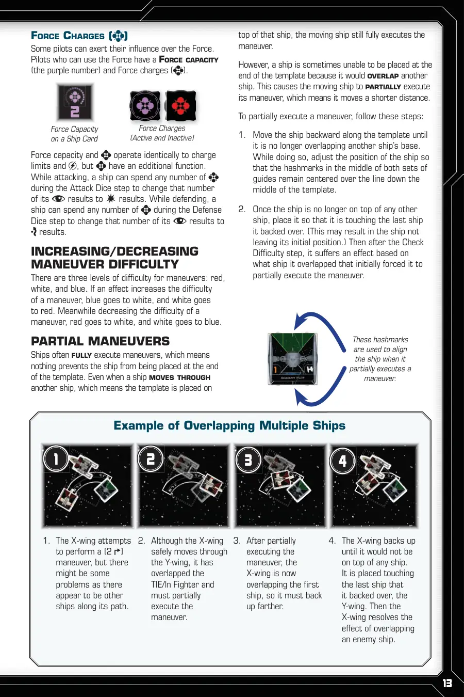
<figcaption>原版规则书 · 第 13 页（点击图片放大）</figcaption>
</figure>

<details class="mt-fold">
<summary>📝 第 13 页 AI 机翻对照（点击展开）</summary>
<div class="mt-body"><p>重叠多艘飞船的示例</p>

<h3>1. X翼战机尝试</h3>

<p>执行一个[2 ]</p>

<p>机动，但可能</p>

<p>会出现一些问题，</p>

<p>因为其路径上</p>

<p>似乎有其他飞船。</p>

<h3>2. 尽管X翼战机</h3>

<p>安全地通过了Y翼战机，</p>

<p>但它与TIE/ln战斗机</p>

<p>重叠，必须部分</p>

<p>执行该机动。</p>

<h3>3. 部分执行</h3>

<p>机动后，X翼战机</p>

<p>现在与第一艘飞船</p>

<p>重叠，因此必须</p>

<p>进一步后退。</p>

<h3>4. X翼战机后退</h3>

<p>直到它不会位于</p>

<p>任何飞船上方。</p>

<p>它被放置在它后退时</p>

<p>经过的最后一艘飞船</p>

<p>（Y翼战机）旁边。</p>

<p>然后X翼战机解决</p>

<p>与敌方飞船重叠的效果。</p>

<p>这些刻度标记用于</p>

<p>在飞船部分执行</p>

<p>机动时对齐飞船。</p>

<h2>力量充能 (󲈯󲈯)</h2>

<p>一些飞行员可以</p>

<p>对原力施加影响。</p>

<p>能够使用原力的飞行员</p>

<p>拥有力量容量</p>

<p>（紫色数字）和力量充能 (󲈯󲈯)。</p>

<p>力量容量和󲈯󲈯的运作方式</p>

<p>与充能限制和&gt;相同，</p>

<p>但󲈯󲈯还有一个额外功能。</p>

<p>在攻击时，飞船可以在</p>

<p>攻击骰子步骤期间</p>

<p>花费任意数量的󲈯󲈯，</p>

<p>将其相应数量的)</p>

<p>结果改为%结果。</p>

<p>在防御时，飞船可以在</p>

<p>防御骰子步骤期间</p>

<p>花费任意数量的󲈯󲈯，</p>

<p>将其相应数量的)</p>

<p>结果改为结果。</p>

<h2>增加/减少</h2>

<h2>机动难度</h2>

<p>机动有三个难度等级：</p>

<p>红色、白色和蓝色。</p>

<p>如果一个效果增加了</p>

<p>机动的难度，蓝色变为白色，</p>

<p>白色变为红色。</p>

<p>而减少机动的难度时，</p>

<p>红色变为白色，</p>

<p>白色变为蓝色。</p>

<h2>部分机动</h2>

<p>飞船通常完全执行机动，</p>

<p>这意味着没有任何东西</p>

<p>阻止飞船被放置在</p>

<p>模板的末端。即使当一艘飞船</p>

<p>穿过另一艘飞船时，</p>

<p>这意味着模板被放置在</p>

<p>飞船上方，移动的飞船</p>

<p>仍然完全执行机动。</p>

<p>然而，有时飞船无法被放置在</p>

<p>模板的末端，因为它会</p>

<p>与另一艘飞船重叠。</p>

<p>这会导致移动的飞船</p>

<p>部分执行其机动，</p>

<p>这意味着它移动的距离较短。</p>

<p>要部分执行机动，请遵循以下步骤：</p>

<h3>1. 沿着模板向后移动飞船，</h3>

<p>直到它不再与</p>

<p>另一艘飞船的底座重叠。</p>

<p>同时，调整飞船的位置，</p>

<p>使两组导轨中间的</p>

<p>刻度标记保持</p>

<p>在模板中线上的居中位置。</p>

<h3>2. 一旦飞船不再位于</h3>

<p>任何其他飞船上方，</p>

<p>将其放置在它后退时</p>

<p>经过的最后一艘飞船</p>

<p>旁边。（这可能导致飞船</p>

<p>没有离开其初始位置。）</p>

<p>然后在检查难度步骤之后，</p>

<p>它根据</p>

<p>哪艘飞船与它重叠，最初迫使它部分执行了该机动。</p></div>
</details>

<figure>
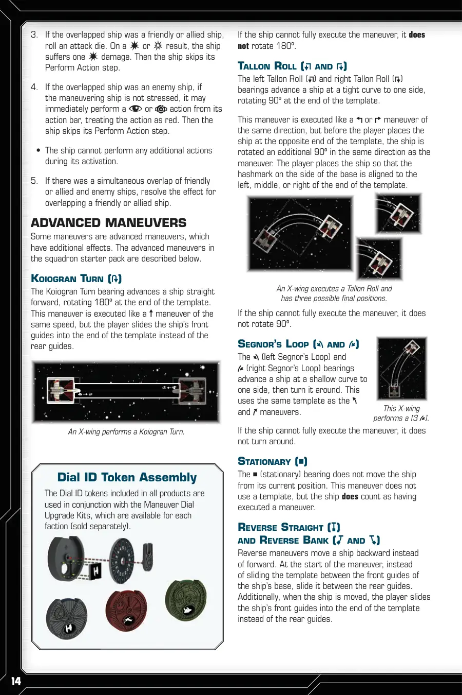
<figcaption>原版规则书 · 第 14 页（点击图片放大）</figcaption>
</figure>

<details class="mt-fold">
<summary>📝 第 14 页 AI 机翻对照（点击展开）</summary>
<div class="mt-body"><h3>3. 如果重叠的飞船是友方或盟友飞船，</h3>

<p>投掷一个攻击骰。如果结果是 % 或 &amp;，该飞船会受到一点 % 伤害。然后该飞船跳过其执行行动步骤。</p>

<h3>4. 如果重叠的飞船是敌方飞船，且机动飞船没有受到压力，它可以立即从其行动栏执行一个 ) 或 5 行动，将该行动视为红色行动。然后该飞船跳过其执行行动步骤。</h3>

<p>• 该飞船在其激活期间不能执行任何额外行动。</p>

<h3>5. 如果同时有友方/盟友飞船和敌方飞船重叠，解决与友方或盟友飞船重叠的效果。</h3>

<h2>高级机动</h2>

<p>一些机动是高级机动，具有额外效果。中队起始包中的高级机动描述如下。</p>

<h2>科伊奥格兰回转 (󲁤)</h2>

<p>科伊奥格兰回转航向使飞船直线前进，在航线模板末端旋转180度。此机动以相同速度的  机动方式执行，但玩家将飞船的前导滑入航线模板的末端，而不是后导。</p>

<p>一架X翼战机执行科伊奥格兰回转。</p>

<p>如果飞船无法完全执行该机动，则不会旋转180度。</p>

<h2>塔隆横滚 (󲁢 和 󲁦)</h2>

<p>左塔隆横滚 ( ) 和右塔隆横滚 ($) 航向使飞船向一侧紧密曲线前进，在航线模板末端旋转90度。</p>

<p>此机动以相同方向的  或  机动方式执行，但在玩家将飞船放置在航线模板的另一端之前，飞船会沿机动方向额外旋转90度。玩家放置飞船时，使底座侧面的哈希标记对齐到航线模板末端的左侧、中间或右侧。</p>

<p>如果飞船无法完全执行该机动，则不会旋转90度。</p>

<h2>塞格诺环 (! 和 #)</h2>

<p>!（左塞格诺环）和 #（右塞格诺环）航向使飞船向一侧浅曲线前进，然后掉头。此机动使用与  和  机动相同的航线模板。</p>

<p>如果飞船无法完全执行该机动，则不会掉头。</p>

<h2>静止 ()</h2>

<p>（静止）航向不会将飞船从当前位置移开。此机动不使用航线模板，但飞船仍被视为执行了一次机动。</p>

<h2>倒退直线 (-)</h2>

<h2>和倒退转弯 (. 和 ,)</h2>

<p>倒退机动使飞船向后移动而不是向前。在机动开始时，不是将航线模板滑入飞船底座的前导之间，而是将其滑入后导之间。此外，当移动飞船时，玩家将飞船的前导滑入航线模板的末端，而不是后导。</p>

<p>一架X翼战机执行塔隆横滚，</p>

<p>并有三种可能的最终位置。</p>

<p>这架X翼战机</p>

<p>执行一个 [3 #]。</p>

<p>拨号指示物组装</p>

<p>所有产品中包含的拨号ID指示物与机动拨号升级套件配合使用，该套件为每个阵营提供（单独出售）。</p></div>
</details>

<figure>
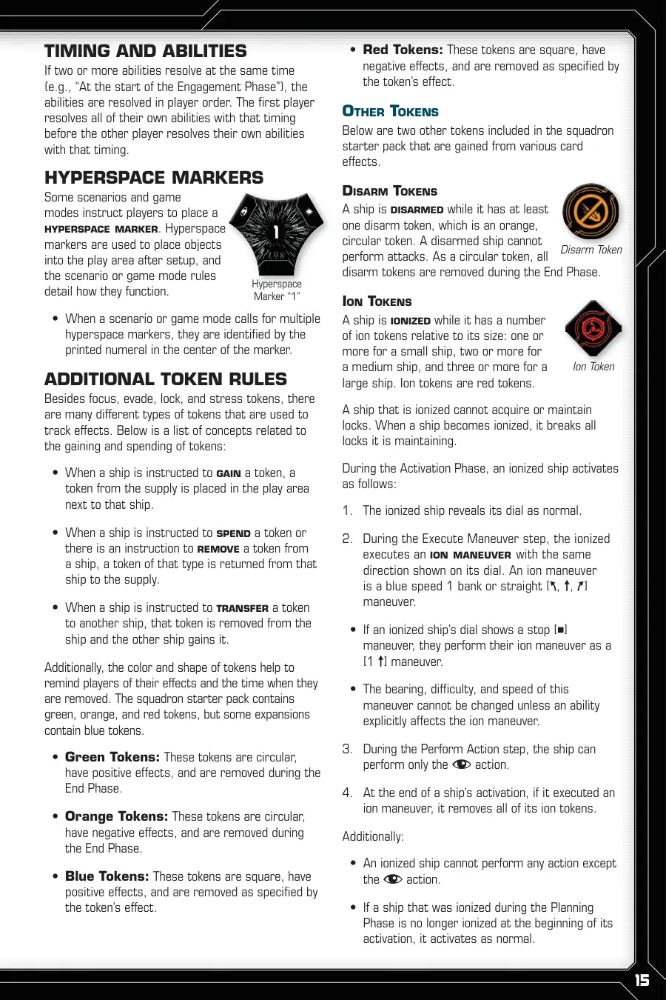
<figcaption>原版规则书 · 第 15 页（点击图片放大）</figcaption>
</figure>

<details class="mt-fold">
<summary>📝 第 15 页 AI 机翻对照（点击展开）</summary>
<div class="mt-body"><h2>时序与能力</h2>

<p>如果两个或更多能力同时触发</p>

<p>（例如，"在交战阶段开始时"），则按玩家顺序解决这些能力。第一玩家先解决所有该时机的自身能力，然后其他玩家再解决该时机的自身能力。</p>

<h2>超空间标记</h2>

<p>一些场景和游戏模式会指示玩家放置一个</p>

<p>超空间标记。超空间标记用于在设置后将物体</p>

<p>放入游戏区域，具体功能由场景或游戏模式规则详细说明。</p>

<p>• 当场景或游戏模式需要多个超空间标记时，它们通过标记中心的印刷数字来区分。</p>

<h2>其他指示物规则</h2>

<p>除了专注、闪避、锁定和压力指示物外，还有许多不同类型的指示物用于追踪效果。以下是关于获得和使用指示物的相关概念列表：</p>

<p>• 当一艘飞船被指示获得一个指示物时，从供应区中取出一个指示物放置在该飞船旁边的游戏区域中。</p>

<p>• 当一艘飞船被指示花费一个指示物或有指令从飞船上移除一个指示物时，将该类型的指示物从飞船返回到供应区。</p>

<p>• 当一艘飞船被指示将一个指示物转移给另一艘飞船时，该指示物从原飞船移除，另一艘飞船获得它。</p>

<p>此外，指示物的颜色和形状有助于提醒玩家其效果和移除时间。中队起始包包含绿色、橙色和红色指示物，但一些扩展包包含蓝色指示物。</p>

<p>• 绿色指示物：这些指示物是圆形的，具有正面效果，并在结束阶段被移除。</p>

<p>• 橙色指示物：这些指示物是圆形的，具有负面效果，并在结束阶段被移除。</p>

<p>• 蓝色指示物：这些指示物是方形的，具有正面效果，并按照指示物效果的说明被移除。</p>

<p>• 红色指示物：这些指示物是方形的，具有负面效果，并按照指示物效果的说明被移除。</p>

<h2>其他指示物</h2>

<p>以下是中队起始包中包含的另外两种指示物，它们通过各种卡牌效果获得。</p>

<h2>解除武装指示物</h2>

<p>当一艘飞船拥有至少一个解除武装指示物（一种橙色圆形指示物）时，该飞船被解除武装。被解除武装的飞船无法执行攻击。作为圆形指示物，所有解除武装指示物在结束阶段被移除。</p>

<h2>离子指示物</h2>

<p>当一艘飞船拥有的离子指示物数量与其尺寸相关时，该飞船被离子化：小型飞船为一个或多个，中型飞船为两个或多个，大型飞船为三个或多个。离子指示物是红色指示物。</p>

<p>被离子化的飞船无法获得或维持锁定。当一艘飞船被离子化时，它会中断其正在维持的所有锁定。</p>

<p>在激活阶段，被离子化的飞船按以下方式激活：</p>

<ol>
  <li>被离子化的飞船像平常一样揭示其拨盘。</li>
</ol>

<h3>2. 在执行机动步骤中，被离子化的飞船执行与其拨盘上显示方向相同的离子机动。离子机动是一种蓝色速度1的转弯或直行[, , ]机动。</h3>

<p>• 如果被离子化飞船的拨盘显示停止[]机动，它们将其离子机动作为[1 ]机动执行。</p>

<p>• 除非有能力明确影响离子机动，否则此机动的方向、难度和速度不能改变。</p>

<h3>3. 在执行行动步骤中，飞船只能执行)行动。</h3>

<ol>
  <li>在飞船激活结束时，如果它执行了离子机动，它会移除其所有的离子指示物。</li>
</ol>

<p>此外：</p>

<p>• 被离子化的飞船不能执行任何行动，除了)行动。</p>

<p>• 如果在规划阶段被离子化的飞船在其激活开始时不再被离子化，它将正常激活。</p>

<p>解除武装指示物</p>

<p>离子指示物</p>

<p>超空间</p>

<p>标记"1"</p></div>
</details>

<figure>
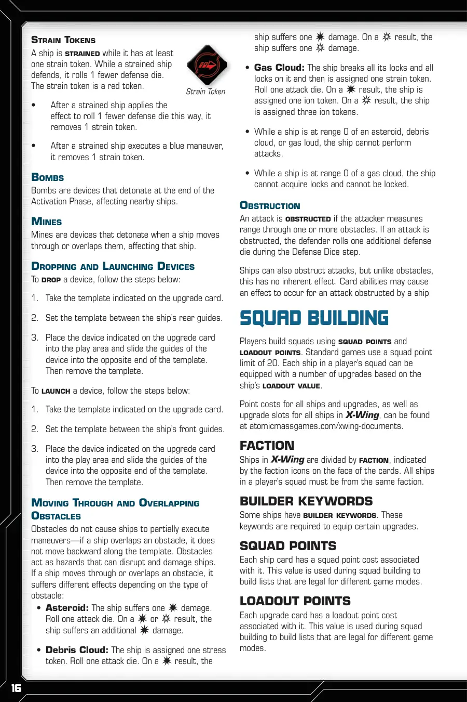
<figcaption>原版规则书 · 第 16 页（点击图片放大）</figcaption>
</figure>

<details class="mt-fold">
<summary>📝 第 16 页 AI 机翻对照（点击展开）</summary>
<div class="mt-body"><h2>疲劳指示物</h2>

<p>当飞船拥有至少一个疲劳指示物时，它处于疲劳状态。当疲劳的飞船防御时，它会少掷1颗防御骰。</p>

<p>疲劳指示物是红色指示物。</p>

<p>•</p>

<p>疲劳的飞船应用效果以这种方式少掷1颗防御骰后，它会移除1个疲劳指示物。</p>

<p>•</p>

<p>疲劳的飞船执行蓝色机动后，它会移除1个疲劳指示物。</p>

<h2>炸弹</h2>

<p>炸弹是在激活阶段结束时引爆的装置，会影响附近的飞船。</p>

<h2>水雷</h2>

<p>水雷是在飞船移动穿过或重叠它们时引爆的装置，会影响该飞船。</p>

<h2>投放和发射装置</h2>

<p>要投放装置，请遵循以下步骤：</p>

<ol>
  <li>取升级卡上标示的模板。</li>
  <li>将模板设置在飞船的后部导轨之间。</li>
</ol>

<h3>3. 将升级卡上标示的装置放入游戏区域，并将装置的导轨滑入模板的另一端。然后移除模板。</h3>

<p>要发射装置，请遵循以下步骤：</p>

<ol>
  <li>取升级卡上标示的模板。</li>
  <li>将模板设置在飞船的前部导轨之间。</li>
</ol>

<h3>3. 将升级卡上标示的装置放入游戏区域，并将装置的导轨滑入模板的另一端。然后移除模板。</h3>

<h2>穿过和重叠障碍物</h2>

<p>障碍物不会导致飞船部分执行机动——如果飞船重叠一个障碍物，它不会沿着模板向后移动。障碍物作为可能扰乱和损坏飞船的危险存在。</p>

<p>如果飞船穿过或重叠障碍物，它会根据障碍物的类型遭受不同的效果：</p>

<p>• 小行星：飞船遭受1点%伤害。掷1颗攻击骰。如果结果为%或&amp;，飞船会遭受额外的%伤害。</p>

<p>• 残骸云：飞船被分配1个压力指示物。掷1颗攻击骰。如果结果为%，飞船遭受1点%伤害。如果结果为&amp;，飞船遭受1点&amp;伤害。</p>

<p>• 气体云：飞船解除其所有的锁定和所有针对它的锁定，然后被分配1个疲劳指示物。掷1颗攻击骰。如果结果为%，飞船被分配1个离子指示物。如果结果为&amp;，飞船被分配3个离子指示物。</p>

<p>• 当飞船处于小行星、残骸云或气体云的0距离时，飞船无法执行攻击。</p>

<p>• 当飞船处于气体云的0距离时，飞船无法获取锁定也无法被锁定。</p>

<h2>阻挡</h2>

<p>如果攻击者测量穿过一个或多个障碍物进行距离，则攻击被阻挡。如果攻击被阻挡，防御者在防御骰步骤期间会额外掷1颗防御骰。</p>

<p>飞船也可以阻挡攻击，但与障碍物不同，这没有固有效果。卡牌能力可能导致被飞船阻挡的攻击产生效果</p>

<h2>战队构建</h2>

<p>玩家使用战队点数构建战队，</p>

<p>LOADOUT POINTS. 标准游戏使用20点小队点数限制。玩家小队中的每艘飞船可以根据飞船的装载值配备一定数量的升级。</p>

<p>所有飞船和升级的点数成本，以及X-Wing中所有飞船的升级槽位，都可以在atomicmassgames.com/xwing-documents找到。</p>

<h2>派系</h2>

<p>X-Wing中的飞船按派系划分，由卡牌正面的派系图标表示。玩家小队中的所有飞船必须来自同一派系。</p>

<h2>构建关键词</h2>

<p>一些飞船有构建关键词。这些关键词是装备某些升级的必要条件。</p>

<h2>小队点数</h2>

<p>每艘飞船卡牌都有相关联的小队点数成本。这个值在小队构建过程中使用，用于构建符合不同游戏模式的合法列表。</p>

<h2>装载点数</h2>

<p>每张升级卡牌都有相关联的装载点数成本。这个值在小队构建过程中使用，用于构建符合不同游戏模式的合法列表。</p></div>
</details>

<figure>
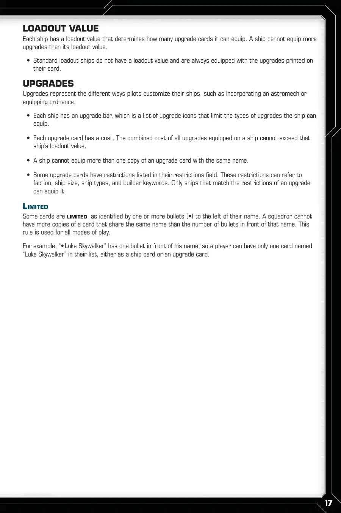
<figcaption>原版规则书 · 第 17 页（点击图片放大）</figcaption>
</figure>

<details class="mt-fold">
<summary>📝 第 17 页 AI 机翻对照（点击展开）</summary>
<div class="mt-body"><h2>载具价值</h2>

<p>每艘飞船都有一个载具价值，决定了它可以装备多少张升级卡牌。一艘飞船不能装备超过其载具价值的升级数量。</p>

<p>• 标准载具飞船没有载具价值，并且总是装备印在其卡牌上的升级。</p>

<h2>升级</h2>

<p>升级代表飞行员定制其飞船的不同方式，例如整合一个宇航机器人或装备武器。</p>

<p>• 每艘飞船都有一个升级栏，这是一个升级图标列表，限制了该飞船可以装备的升级类型。</p>

<p>• 每张升级卡牌都有一个费用。装备在一艘飞船上的所有升级的总费用不能超过该飞船的载具价值。</p>

<p>• 一艘飞船不能装备多张名称相同的升级卡牌。</p>

<p>• 一些升级卡牌在其限制字段中列有限制。这些限制可以指派系、飞船尺寸、飞船类型和建造者关键词。只有符合升级限制的飞船才能装备它。</p>

<h2>限制</h2>

<p>一些卡牌是限制卡，如其名称左侧有一个或多个圆点(•)标识。一个中队不能拥有多于名称前圆点数量的同名卡牌。此规则适用于所有游戏模式。</p>

<p>例如，"•卢克·天行者"的名字前有一个圆点，因此一个玩家在其列表中只能有一张名为"卢克·天行者"的卡牌，无论是作为飞船卡牌还是升级卡牌。</p></div>
</details>

<figure>
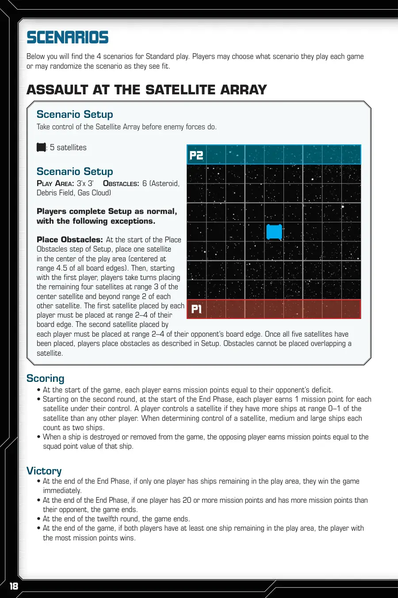
<figcaption>原版规则书 · 第 18 页（点击图片放大）</figcaption>
</figure>

<details class="mt-fold">
<summary>📝 第 18 页 AI 机翻对照（点击展开）</summary>
<div class="mt-body"><p>P1</p>

<p>P2</p>

<p>以下您将找到标准游戏的4个场景。玩家可以选择每局游戏玩哪个场景，或者根据他们认为合适的方式随机选择场景。</p>

<h2>卫星阵列突袭</h2>

<p>场景设置</p>

<p>在敌方部队之前控制卫星阵列。</p>

<p>: 5个卫星</p>

<p>场景设置</p>

<p>游戏区域：3'x 3'</p>

<p>障碍物：6个（小行星、碎片场、气体云）</p>

<p>玩家正常完成设置，但有以下例外。</p>

<p>放置障碍物：在设置的放置障碍物步骤开始时，在游戏区域中央放置一个卫星（位于所有版图边缘距离4.5处）。然后，从第一位玩家开始，玩家轮流将剩余的四个卫星放置在中心卫星距离3的位置，并且彼此卫星距离至少2。每位玩家放置的第一个卫星必须放置在其版图边缘距离2-4的位置。每位玩家放置的第二个卫星必须放置在其对手版图边缘距离2-4的位置。一旦所有五个卫星都已放置，玩家按照设置中的描述放置障碍物。障碍物不能与卫星重叠放置。</p>

<p>计分</p>

<p>• 游戏开始时，每位玩家获得等于其对手缺点的任务点数。</p>

<p>• 从第二回合开始，在每个回合的结束阶段开始时，每位玩家获得其控制的每个卫星的1个任务点数。如果玩家在卫星距离0-1范围内拥有比其他任何玩家更多的飞船，则该玩家控制该卫星。在确定卫星控制权时，中型和大型飞船各计为两艘飞船。</p>

<p>• 当飞船被摧毁或移出游戏时，对手玩家获得等于该飞船小队点数的任务点数。</p>

<p>胜利</p>

<p>• 在结束阶段结束时，如果只有一位玩家在游戏区域内仍有飞船，他们立即赢得游戏。</p>

<p>• 在结束阶段结束时，如果一位玩家拥有20个或更多任务点数，并且比对手拥有更多任务点数，游戏结束。</p>

<p>• 在第十二回合结束时，游戏结束。</p>

<p>• 游戏结束时，如果两位玩家在游戏区域内都至少有一艘飞船，则任务点数最多的玩家获胜。</p>

<h2>场景</h2></div>
</details>

<figure>
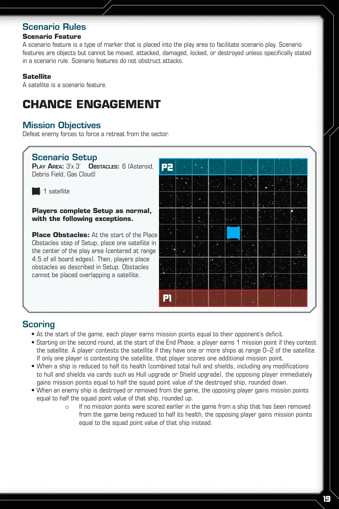
<figcaption>原版规则书 · 第 19 页（点击图片放大）</figcaption>
</figure>

<details class="mt-fold">
<summary>📝 第 19 页 AI 机翻对照（点击展开）</summary>
<div class="mt-body"><p>P1</p>

<p>P2</p>

<p>场景规则</p>

<p>场景特性</p>

<p>场景特性是一种放置到游戏区域中以促进场景游戏的标记物。场景特性是物体，但除非在场景规则中特别说明，否则不能被移动、攻击、损坏、锁定或摧毁。场景特性不阻碍攻击。</p>

<p>卫星</p>

<p>卫星是一种场景特性。</p>

<h2>随机遭遇</h2>

<p>任务目标</p>

<p>击败敌方力量，迫使其撤离该区域。</p>

<p>场景设置</p>

<p>游戏区域：3'x 3'</p>

<p>障碍物：6个（小行星、碎片场、气体云）</p>

<p>：1个卫星</p>

<p>玩家正常完成设置，但有以下例外。</p>

<p>放置障碍物：在设置的放置障碍物步骤开始时，将一个卫星放置在游戏区域的中心（距离所有版图边缘4.5处）。然后，玩家按照设置中的描述放置障碍物。障碍物不能与卫星重叠。</p>

<p>计分</p>

<p>• 游戏开始时，每个玩家获得等于其对手缺额的任务点数。</p>

<p>• 从第二回合开始，在每个回合的结束阶段，如果一个玩家争夺卫星，则获得1个任务点。如果一个玩家有一艘或多艘飞船在卫星距离0-2范围内，则该玩家争夺卫星。如果只有一个玩家在争夺卫星，该玩家将获得一个额外的任务点。</p>

<p>• 当一艘飞船的健康值降至一半（船体和护盾的总和，包括通过诸如"船体升级"或"护盾升级"等卡牌对船体和护盾的任何修改）时，对手立即获得等于被摧毁飞船小队点数一半的任务点数（向下取整）。</p>

<p>• 当敌方飞船被摧毁或从游戏中移除时，对手获得等于该飞船小队点数一半的任务点数（向上取整）。</p>

<p>o</p>

<p>如果之前从游戏中移除的飞船因健康值降至一半而未获得任务点，则对手将获得等于该飞船小队点数的任务点数。</p></div>
</details>

<figure>
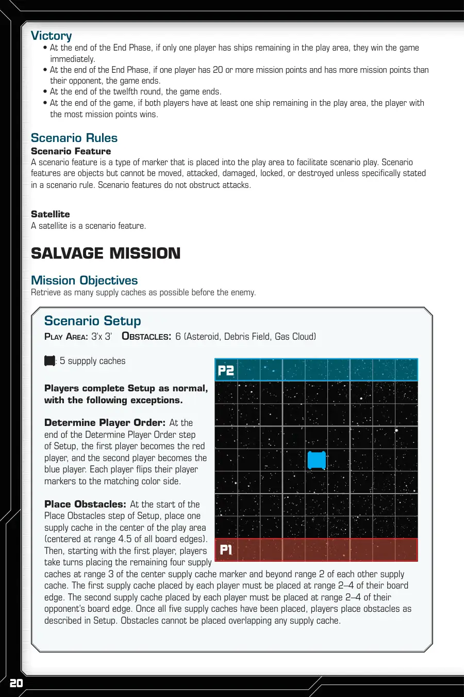
<figcaption>原版规则书 · 第 20 页（点击图片放大）</figcaption>
</figure>

<details class="mt-fold">
<summary>📝 第 20 页 AI 机翻对照（点击展开）</summary>
<div class="mt-body"><p>P1</p>

<p>P2</p>

<p>胜利</p>

<p>• 在结束阶段结束时，如果只有一个玩家在游戏区域中还有飞船剩余，他们立即赢得游戏。</p>

<p>• 在结束阶段结束时，如果一个玩家拥有20个或更多任务点，并且任务点比对手多，游戏结束。</p>

<p>• 在第十二轮结束时，游戏结束。</p>

<p>• 在游戏结束时，如果两个玩家在游戏区域中至少都有一艘飞船剩余，则任务点最多的玩家获胜。</p>

<p>场景规则</p>

<p>场景特性</p>

<p>场景特性是一种放置在游戏区域中以促进场景游戏的标记物。场景特性是物体，但除非在场景规则中特别说明，否则不能被移动、攻击、损坏、锁定或摧毁。场景特性不会阻碍攻击。</p>

<p>卫星</p>

<p>卫星是一种场景特性。</p>

<h2>打捞任务</h2>

<p>任务目标</p>

<p>在敌人之前尽可能多地回收补给箱。</p>

<p>场景设置</p>

<p>游戏区域：3'x3'</p>

<p>障碍物：6个（小行星、碎片场、气体云）</p>

<p>：5个补给箱</p>

<p>玩家正常完成设置，但有以下例外。</p>

<p>确定玩家顺序：在设置过程中的"确定玩家顺序"步骤结束时，第一个玩家成为红色玩家，第二个玩家成为蓝色玩家。每个玩家将他们的玩家标记翻转到对应颜色的那一面。</p>

<p>放置障碍物：在设置过程中的"放置障碍物"步骤开始时，在游戏区域中心（位于所有版图边缘距离4.5处）放置一个补给箱。然后，从第一个玩家开始，玩家轮流放置剩余的四个补给箱，放置位置需距离中心补给箱标记3格，并且彼此之间距离至少2格。每个玩家放置的第一个补给箱必须位于他们自己版图边缘距离2-4格处。每个玩家放置的第二个补给箱必须位于对手版图边缘距离2-4格处。一旦所有五个补给箱都已放置，玩家按照设置中的描述放置障碍物。障碍物不能放置在任何补给箱上。</p></div>
</details>

<figure>
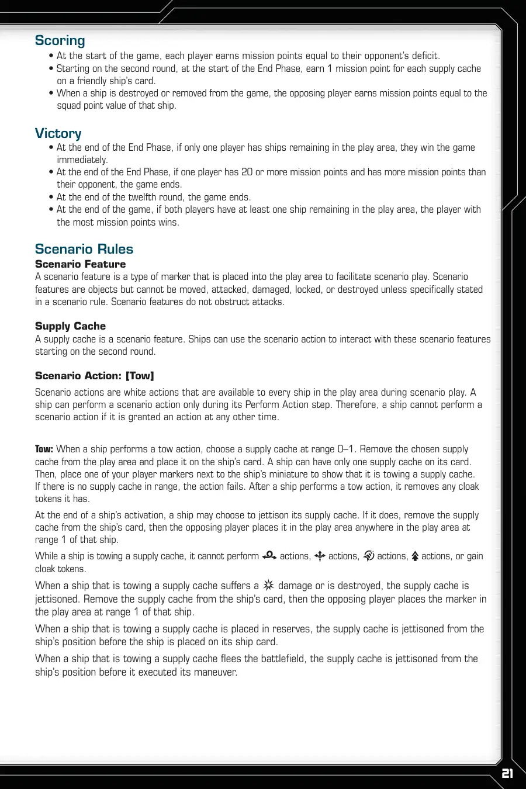
<figcaption>原版规则书 · 第 21 页（点击图片放大）</figcaption>
</figure>

<details class="mt-fold">
<summary>📝 第 21 页 AI 机翻对照（点击展开）</summary>
<div class="mt-body"><h2>计分</h2>

<p>• 在游戏开始时，每位玩家获得等于其对手赤字的任务点数。</p>

<p>• 从第二轮开始，在结束阶段开始时，每艘友方飞船卡牌上的补给库获得1个任务点数。</p>

<p>• 当一艘飞船被摧毁或从游戏中移除时，对手玩家获得等于该飞船小队点数的任务点数。</p>

<h2>胜利</h2>

<p>• 在结束阶段结束时，如果只有一个玩家在游戏区域中仍有飞船，他们立即赢得游戏。</p>

<p>• 在结束阶段结束时，如果一个玩家拥有20个或更多任务点数，并且任务点数多于对手，游戏结束。</p>

<p>• 在第十二轮结束时，游戏结束。</p>

<p>• 在游戏结束时，如果两个玩家在游戏区域中至少都有一艘飞船，则任务点数最多的玩家获胜。</p>

<h2>场景规则</h2>

<h3>场景特性</h3>

<p>场景特性是一种放置在游戏区域中以促进场景游戏的标记物。场景特性是物体，但除非场景规则中特别说明，否则不能被移动、攻击、损坏、锁定或摧毁。场景特性不阻碍攻击。</p>

<h3>补给库</h3>

<p>补给库是一种场景特性。飞船从第二轮开始可以使用场景行动与这些场景特性互动。</p>

<h3>场景行动：【拖曳】</h3>

<p>场景行动是场景游戏中游戏区域内每艘飞船都可使用的白色行动。一艘飞船只能在执行行动步骤期间执行场景行动。因此，如果飞船在任何其他时间被授予行动，它就不能执行场景行动。</p>

<p>拖曳：当一艘飞船执行拖曳行动时，选择一个距离0-1的补给库。将所选补给库从游戏区域移除，并将其放置在飞船的卡牌上。一艘飞船的卡牌上只能有一个补给库。然后，将你的一个玩家指示物放在飞船的模型旁边，表示它正在拖曳一个补给库。如果没有距离内的补给库，行动失败。飞船执行拖曳行动后，移除其拥有的所有隐身指示物。</p>

<p>在飞船激活结束时，飞船可以选择抛弃其补给库。如果这样做，从飞船卡牌上移除补给库，然后对手玩家将其放置在游戏区域中该飞船距离1的任何位置。</p>

<p>当一艘飞船拖曳补给库时，它不能执行3行动、行动、行动、行动，或获得隐身指示物。</p>

<p>当一艘拖曳补给库的飞船遭受&amp;伤害或被摧毁时，补给库被抛弃。从飞船卡牌上移除补给库，然后对手玩家将该指示物放置在游戏区域中该飞船距离1的位置。</p>

<p>当一艘拖曳补给库的飞船被放置在预备区时，补给库被抛弃。</p>

<p>在飞船被放置到其飞船卡上之前，飞船的位置。</p>

<p>当一艘拖着补给舱的飞船逃离战场时，该补给舱会在飞船执行其机动操作前从飞船的位置被抛弃。</p></div>
</details>

<figure>
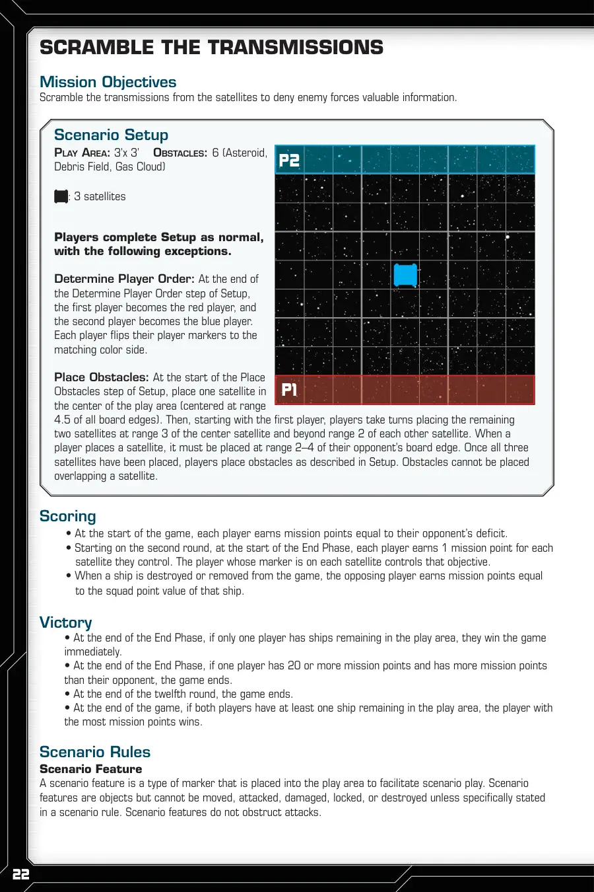
<figcaption>原版规则书 · 第 22 页（点击图片放大）</figcaption>
</figure>

<details class="mt-fold">
<summary>📝 第 22 页 AI 机翻对照（点击展开）</summary>
<div class="mt-body"><p>P1</p>

<p>P2</p>

<h2>扰乱传输</h2>

<p>任务目标</p>

<p>扰乱卫星的传输，以阻止敌方部队获取有价值的信息。</p>

<p>场景设置</p>

<p>游戏区域：3'x 3'</p>

<p>障碍物：6个（小行星、碎片场、气体云）</p>

<p>：3个卫星</p>

<p>玩家正常完成设置，但有以下例外。</p>

<p>确定玩家顺序：在设置的"确定玩家顺序"步骤结束时，第一位玩家成为红色玩家，第二位玩家成为蓝色玩家。每位玩家将他们的玩家标记翻到对应颜色的那一面。</p>

<p>放置障碍物：在设置的"放置障碍物"步骤开始时，在游戏区域中央放置一个卫星（位于所有版图边缘范围4.5的中心处）。然后，从第一位玩家开始，玩家轮流将剩余的两个卫星放置在距离中心卫星范围3的位置，并且彼此卫星之间距离至少为范围2。当玩家放置卫星时，必须将其放置在距离对手版图边缘范围2-4的位置。一旦所有三个卫星都已放置，玩家按照设置中的描述放置障碍物。障碍物不能放置在卫星上方的重叠位置。</p>

<p>计分</p>

<p>• 游戏开始时，每位玩家获得等于其对手赤字的任务点数。</p>

<p>• 从第二回合开始，在每个回合的结束阶段开始时，每位玩家获得他们控制的每个卫星的1个任务点数。每个卫星上放置有该玩家标记的玩家控制该目标。</p>

<p>• 当飞船被摧毁或从游戏中移除时，对手玩家获得等于该飞船小队点数的任务点数。</p>

<p>胜利</p>

<p>• 在结束阶段结束时，如果只有一位玩家在游戏区域内仍有飞船，他们立即赢得游戏。</p>

<p>• 在结束阶段结束时，如果一位玩家拥有20个或更多任务点数，并且任务点数多于对手，游戏结束。</p>

<p>• 在第十二回合结束时，游戏结束。</p>

<p>• 游戏结束时，如果两位玩家在游戏区域内都至少有一艘飞船，则任务点数最多的玩家获胜。</p>

<p>场景规则</p>

<p>场景特性</p>

<p>场景特性是一种放置在游戏区域内的标记类型，用于促进场景游戏。场景特性是物体，但除非场景规则中特别说明，否则不能被移动、攻击、损坏、锁定或摧毁。场景特性不阻碍攻击。</p></div>
</details>

<figure>
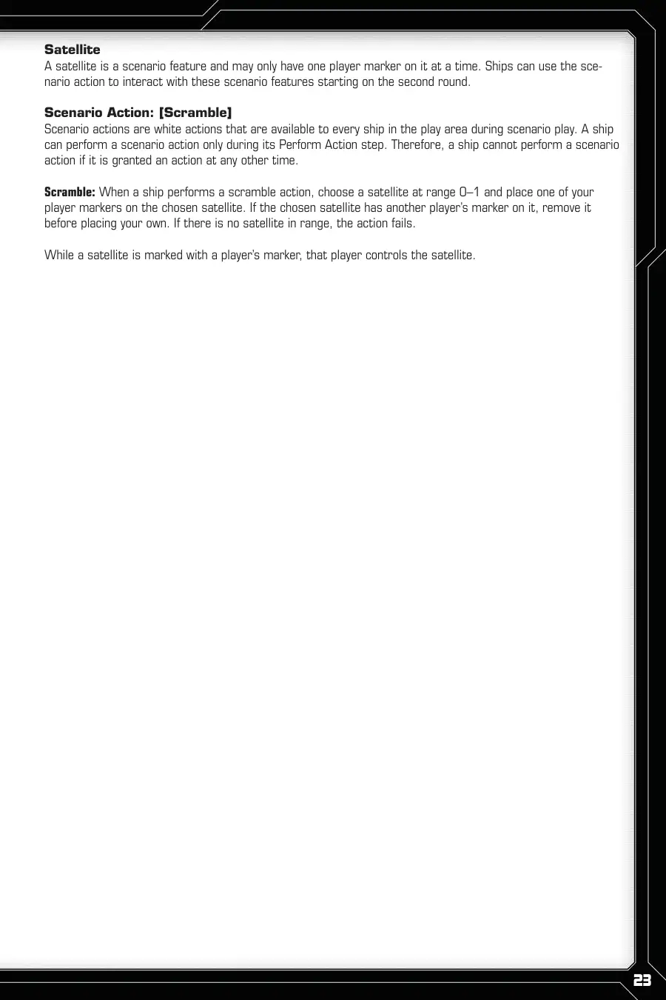
<figcaption>原版规则书 · 第 23 页（点击图片放大）</figcaption>
</figure>

<details class="mt-fold">
<summary>📝 第 23 页 AI 机翻对照（点击展开）</summary>
<div class="mt-body"><p>卫星</p>

<p>卫星是一种场景特性，一次只能有一个玩家指示物在其上。飞船可以在第二轮开始后，使用场景行动与这些场景特性互动。</p>

<p>场景行动：[紧急升空]</p>

<p>场景行动是白色行动，在游戏过程中，游戏区域内的每艘飞船都可以使用。一艘飞船只能在执行行动步骤期间执行场景行动。因此，如果飞船在任何其他时间被授予行动，它就不能执行场景行动。</p>

<p>紧急升空：当一艘飞船执行紧急升空行动时，选择一个距离0-1的卫星，并将你的一个玩家指示物放置在所选卫星上。如果所选卫星上有另一个玩家的指示物，在放置你自己的之前将其移除。如果没有卫星在范围内，行动失败。</p>

<p>当卫星被一个玩家的指示物标记时，该玩家控制该卫星。</p></div>
</details>

<figure>
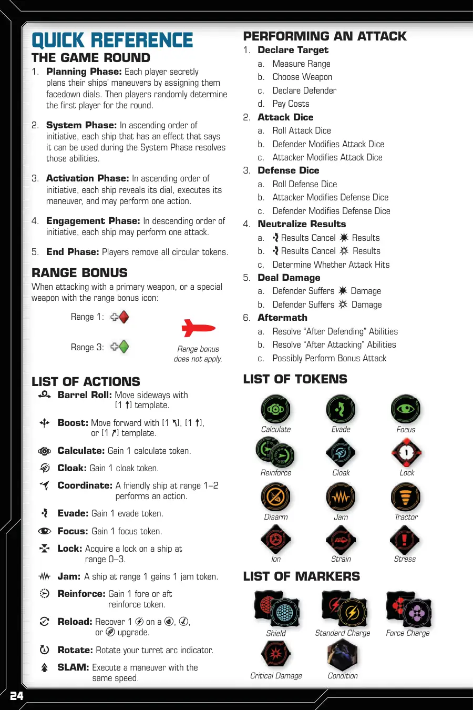
<figcaption>原版规则书 · 第 24 页（点击图片放大）</figcaption>
</figure>

<details class="mt-fold">
<summary>📝 第 24 页 AI 机翻对照（点击展开）</summary>
<div class="mt-body"><h2>快速参考</h2>

<h2>游戏回合</h2>

<h3>1. 计划阶段：每位玩家秘密通过为其飞船分配面朝下的拨盘来计划飞船的机动。然后玩家随机决定本回合的第一位玩家。</h3>

<h3>2. 系统阶段：按先手顺序，每个拥有可在系统阶段使用效果的飞船会解决这些能力。</h3>

<h3>3. 激活阶段：按先手顺序，每艘飞船揭示其拨盘，执行其机动，并可以执行一个行动。</h3>

<h3>4. 交战阶段：按先手逆序，每艘飞船可以执行一次攻击。</h3>

<ol>
  <li>结束阶段：玩家移除所有圆形指示物。</li>
</ol>

<h2>射程加成</h2>

<p>使用主要武器或带有射程加成图标的特殊武器进行攻击时：</p>

<p>射程 1：</p>

<p>射程 3：</p>

<h2>行动列表</h2>

<p>射程加成</p>

<p>不适用。</p>

<p>g</p>

<h2>执行攻击</h2>

<h3>1. 宣告目标</h3>

<p>a.</p>

<p>测量射程</p>

<p>b.</p>

<p>选择武器</p>

<p>c.</p>

<p>宣告防御者</p>

<p>d.</p>

<p>支付费用</p>

<h3>2. 攻骰</h3>

<p>a.</p>

<p>投掷攻击骰</p>

<p>b.</p>

<p>防御者修改攻击骰</p>

<p>c.</p>

<p>攻击者修改攻击骰</p>

<h3>3. 防御骰</h3>

<p>a.</p>

<p>投掷防御骰</p>

<p>b.</p>

<p>攻击者修改防御骰</p>

<p>c.</p>

<p>防御者修改防御骰</p>

<h3>4. 抵消结果</h3>

<p>a.</p>

<p>% 结果抵消 % 结果</p>

<p>b.</p>

<p>&amp; 结果抵消 &amp; 结果</p>

<p>c.</p>

<p>确定攻击是否命中</p>

<h3>5. 造成伤害</h3>

<p>a.</p>

<p>防御者遭受 % 伤害</p>

<p>b.</p>

<p>防御者遭受 &amp; 伤害</p>

<h3>6. 攻击后</h3>

<p>a.</p>

<p>解决"防御后"能力</p>

<p>b.</p>

<p>解决"攻击后"能力</p>

<p>c.</p>

<p>可能执行额外攻击</p>

<p>横滚：使用 [1 ] 模板横向移动。</p>

<p>推进：使用 [1 ]、[1 ] 或 [1 ] 模板向前移动。</p>

<p>计算：获得 1 个计算指示物。</p>

<p>隐形：获得 1 个隐形指示物。</p>

<p>协调：友方飞船在射程 1-2 内执行一个行动。</p>

<p>规避：获得 1 个规避指示物。</p>

<p>聚焦：获得 1 个聚焦指示物。</p>

<p>锁定：在射程 0-3 内锁定一艘飞船。</p>

<p>干扰：射程 1 内的一艘飞船获得 1 个干扰指示物。</p>

<p>强化：获得 1 个前部或后部强化指示物。</p>

<p>重新装填：恢复 1 个 &gt; 在</p>

<p>、 或  升级上的。</p>

<p>旋转：旋转你的炮塔弧度指示器。</p>

<p>SLAM：执行相同速度的机动。</p>

<p></p>

<p></p>

<p></p>

<p></p>

<p>)</p>

<p>*</p>

<p></p>

<p></p>

<p>+</p>

<p></p>

<p>致命伤害</p>

<h2>指示物列表</h2>

<p>压力</p>

<p>疲劳</p>

<p>锁定</p>

<p>离子</p>

<p>干扰</p>

<p>解除武装</p>

<p>牵引</p>

<p>规避</p>

<p>计算</p>

<p>聚焦</p>

<p>隐形</p>

<p>强化</p>

<p>护盾</p>

<p>标准充能</p>

<p>原力充能</p>

<h2>标记物列表</h2>

<p>状态</p>

<p>g</p>

<p>状态</p></div>
</details>
        </div>

        <footer class="source-note">
<p>来源：<a href="https://cdn.svc.asmodee.net/production-amgcom/uploads/2023/11/SWZ_Rulebook_Web111.pdf" target="_blank" rel="noopener">Atomic Mass Games 官方规则文档页（atomicmassgames.com/xwing-docs）</a>（2012 SWZ_Rulebook_Web111.pdf）· 译文仅供个人学习查阅，规则内容归 Fantasy Flight Games / Atomic Mass Games 及版权方所有 · 原文版權與商标归原出版方。</p>
</footer>
      </article>
    </main>
  </div>

  <button class="to-top" aria-label="返回顶部" data-i18n-aria="backTop">↑</button>
  <script src="../assets/js/i18n.js"></script>
  <script src="../assets/js/main.js"></script>
</body>
</html>
